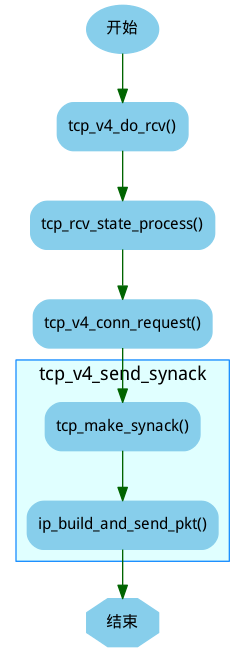

TCP内核源码分析笔记
Table of Contents
1 术语
1.1 ABC
- 英文全称：Appropriate Byte Count
- 中文全称: 适当字节计数
- 功能描述: ABC是一种针对于部分确认应答的更慢地增加拥塞窗口(cwnd)的方法。
可能的值为：
- 0: 每一个应答增加拥塞窗口一次(无ABC)
- 1: 每一个最大传输段应答增加拥塞窗口一次
- 2：允许增加拥塞控制窗口两次，如果应答是为了补偿延时应答的针对两个段的应答。
- 0: 每一个应答增加拥塞窗口一次(无ABC)
1.2 SACK
- 英文全称: Selective Acknowledgment.
- 中文全称: 选择性确认
- 功能描述: SACK是TCP选项，它使得接收方能告诉发送方哪些报文段丢失，哪些报文段重传了，哪些报文段已经提前收到等信息。
根据这些信息TCP就可以只重传哪些真正丢失的报文段。需要注意的是只有收到失序的分组时才会可能会发送SACK，TCP的ACK还
是建立在累积确认的基础上的。也就是说如果收到的报文段与期望收到的报文段的序号相同就会发送累积的ACK，SACK只是针对
失序到达的报文段的。
1.3 D-SACK
- 英文全称: duplicate-Selective Acknowledgment.
- 中文全称: 重复的SACK
- 功能描述: RFC2883中对SACK进行了扩展。SACK中的信息描述的是收到的报文段，这些报文段可能是正常接收的，也可能是重复接收的，
通过对SACK进行扩展，D-SACK可以在SACK选项中描述它重复收到的报文段。但是需要注意的是D-SACK只用于报告接收端收到的最后一
个报文与已经接收了的报文的重复部分
1.4 FACK
- 英文全称: Forward Acknowledgment
- 中文全称: 提前确认
- 功能描述: FACK算法采取激进策略，将所有SACK的未确认区间当做丢失段。虽然这种策略通常带来更佳的网络性能，但是过于激进，因为SACK未确认的区间段可能只是发送了重排，而并非丢失
1.5 F-RTO
- 英文全称: Forward RTO Recovery
- 中文全称: 虚假超时
- 功能描述: F-RTO的基本思想是判断RTO是否正常，从而决定是否执行拥塞避免算法。方法是观察RTO之后的两个ACK。如果ACK不是冗余ACK，并且确认的包不是重传
的，会认为RTO是虚假的就不执行拥塞避免算法。
1.6 nagle算法
- 功能描述: nagle算法主要目的是减少网络流量，当你发送的数据包太小时，TCP并不立即发送该数据包，而是缓存起来直到数据包到达一定大小后才发送。
1.7 cork算法
- 功能描述: CORK算法的初衷：提高网络利用率，理想情况下，完全避免发送小包，仅仅发送满包以及不得不发的小包。
1.8 template
- 英文全称:
- 中文全称:
- 功能描述:
2 tcp_v4_connect()
- 描述: 建立与服务器连接，发送SYN段
- 返回值: 0或错误码
- 代码关键路径:
1: int tcp_v4_connect(struct sock *sk, struct sockaddr *uaddr, int addr_len) 2: { 3: ..... 4: /* 设置目的地址和目标端口 */ 5: inet->dport = usin->sin_port; 6: inet->daddr = daddr; 7: .... 8: /* 初始化MSS上限 */ 9: tp->rx_opt.mss_clamp = 536; 10: 11: /* Socket identity is still unknown (sport may be zero). 12: * However we set state to SYN-SENT and not releasing socket 13: * lock select source port, enter ourselves into the hash tables and 14: * complete initialization after this. 15: */ 16: tcp_set_state(sk, TCP_SYN_SENT);/* 设置状态 */ 17: err = tcp_v4_hash_connect(sk);/* 将传输控制添加到ehash散列表中，并动态分配端口 */ 18: if (err) 19: goto failure; 20: .... 21: if (!tp->write_seq)/* 还未计算初始序号 */ 22: /* 根据双方地址、端口计算初始序号 */ 23: tp->write_seq = secure_tcp_sequence_number(inet->saddr, 24: inet->daddr, 25: inet->sport, 26: usin->sin_port); 27: 28: /* 根据初始序号和当前时间，随机算一个初始id */ 29: inet->id = tp->write_seq ^ jiffies; 30: 31: /* 发送SYN段 */ 32: err = tcp_connect(sk); 33: rt = NULL; 34: if (err) 35: goto failure; 36: 37: return 0; 38: }
3 sys_accept()
- 描述: 调用tcp_accept(), 并把它返回的newsk进行连接描述符分配后返回给用户空间。
- 返回值: 连接描述符
- 代码关键路径:
1: asmlinkage long sys_accept(int fd, struct sockaddr __user *upeer_sockaddr, int __user *upeer_addrlen) 2: { 3: struct socket *sock, *newsock; 4: ..... 5: sock = sockfd_lookup(fd, &err);/* 获得侦听端口的socket */ 6: ..... 7: if (!(newsock = sock_alloc()))/* 分配一个新的套接口，用来处理与客户端的连接 */ 8: ..... 9: /* 调用传输层的accept，对TCP来说，是inet_accept */ 10: err = sock->ops->accept(sock, newsock, sock->file->f_flags); 11: .... 12: if (upeer_sockaddr) {/* 调用者需要获取对方套接口地址和端口 */ 13: /* 调用传输层回调获得对方的地址和端口 */ 14: if(newsock->ops->getname(newsock, (struct sockaddr *)address, &len, 2)<0) { 15: } 16: /* 成功后复制到用户态 */ 17: err = move_addr_to_user(address, len, upeer_sockaddr, upeer_addrlen); 18: } 19: ..... 20: if ((err = sock_map_fd(newsock)) < 0)/* 为新连接分配文件描述符 */ 21: 22: return err; 23: }
3.1 tcp_accept()
[注]: 在内核2.6.32以后对应函数为inet_csk_accept().
- 描述: 通过在规定时间内，判断tcp_sock->accept_queue队列非空，代表有新的连接进入．
- 返回值: (struct sock *)newsk;
- 代码关键路径:
1: struct sock *tcp_accept(struct sock *sk, int flags, int *err) 2: { 3: .... 4: /* Find already established connection */ 5: if (!tp->accept_queue) {/* accept队列为空，说明还没有收到新连接 */ 6: long timeo = sock_rcvtimeo(sk, flags & O_NONBLOCK);/* 如果套口是非阻塞的，或者在一定时间内没有新连接，则返回 */ 7: 8: if (!timeo)/* 超时时间到，没有新连接，退出 */ 9: goto out; 10: 11: /* 运行到这里，说明有新连接到来，则等待新的传输控制块 */ 12: error = wait_for_connect(sk, timeo); 13: if (error) 14: goto out; 15: } 16: 17: req = tp->accept_queue; 18: if ((tp->accept_queue = req->dl_next) == NULL) 19: tp->accept_queue_tail = NULL; 20: 21: newsk = req->sk; 22: sk_acceptq_removed(sk); 23: tcp_openreq_fastfree(req); 24: .... 25: 26: return newsk; 27: }
4 三次握手
4.1 客户端发送SYN段
- 由tcp_v4_connect()->tcp_connect()->tcp_transmit_skb()发送，并置为TCP_SYN_SENT.
- 代码关键路径:
1: /* 构造并发送SYN段 */ 2: int tcp_connect(struct sock *sk) 3: { 4: struct tcp_sock *tp = tcp_sk(sk); 5: struct sk_buff *buff; 6: 7: tcp_connect_init(sk);/* 初始化传输控制块中与连接相关的成员 */ 8: 9: /* 为SYN段分配报文并进行初始化 */ 10: buff = alloc_skb(MAX_TCP_HEADER + 15, sk->sk_allocation); 11: if (unlikely(buff == NULL)) 12: return -ENOBUFS; 13: 14: /* Reserve space for headers. */ 15: skb_reserve(buff, MAX_TCP_HEADER); 16: 17: TCP_SKB_CB(buff)->flags = TCPCB_FLAG_SYN; 18: TCP_ECN_send_syn(sk, tp, buff); 19: TCP_SKB_CB(buff)->sacked = 0; 20: skb_shinfo(buff)->tso_segs = 1; 21: skb_shinfo(buff)->tso_size = 0; 22: buff->csum = 0; 23: TCP_SKB_CB(buff)->seq = tp->write_seq++; 24: TCP_SKB_CB(buff)->end_seq = tp->write_seq; 25: tp->snd_nxt = tp->write_seq; 26: tp->pushed_seq = tp->write_seq; 27: tcp_ca_init(tp); 28: 29: /* Send it off. */ 30: TCP_SKB_CB(buff)->when = tcp_time_stamp; 31: tp->retrans_stamp = TCP_SKB_CB(buff)->when; 32: 33: /* 将报文添加到发送队列上 */ 34: __skb_queue_tail(&sk->sk_write_queue, buff); 35: sk_charge_skb(sk, buff); 36: tp->packets_out += tcp_skb_pcount(buff); 37: /* 发送SYN段 */ 38: tcp_transmit_skb(sk, skb_clone(buff, GFP_KERNEL)); 39: TCP_INC_STATS(TCP_MIB_ACTIVEOPENS); 40: 41: /* Timer for repeating the SYN until an answer. */ 42: /* 启动重传定时器 */ 43: tcp_reset_xmit_timer(sk, TCP_TIME_RETRANS, tp->rto); 44: return 0; 45: } 46:
4.2 服务端接收到SYN段后，发送SYN/ACK处理
- 由tcp_v4_do_rcv()->tcp_rcv_state_process()->tcp_v4_conn_request()->tcp_v4_send_synack().
- tcp_v4_send_synack()
- tcp_make_synack(sk, dst, req); * 根据路由、传输控制块、连接请求块中的构建SYN+ACK段 *
- ip_build_and_send_pkt(); * 生成IP数据报并发送出去 *

图: 服务端接收到SYN段后，发送SYN/ACK处理流程。
- 代码关键路径:
1: /* 向客户端发送SYN+ACK报文 */ 2: static int tcp_v4_send_synack(struct sock *sk, struct open_request *req, 3: struct dst_entry *dst) 4: { 5: int err = -1; 6: struct sk_buff * skb; 7: 8: /* First, grab a route. */ 9: /* 查找到客户端的路由 */ 10: if (!dst && (dst = tcp_v4_route_req(sk, req)) == NULL) 11: goto out; 12: 13: /* 根据路由、传输控制块、连接请求块中的构建SYN+ACK段 */ 14: skb = tcp_make_synack(sk, dst, req); 15: 16: if (skb) {/* 生成SYN+ACK段成功 */ 17: struct tcphdr *th = skb->h.th; 18: 19: /* 生成校验码 */ 20: th->check = tcp_v4_check(th, skb->len, 21: req->af.v4_req.loc_addr, 22: req->af.v4_req.rmt_addr, 23: csum_partial((char *)th, skb->len, 24: skb->csum)); 25: 26: /* 生成IP数据报并发送出去 */ 27: err = ip_build_and_send_pkt(skb, sk, req->af.v4_req.loc_addr, 28: req->af.v4_req.rmt_addr, 29: req->af.v4_req.opt); 30: if (err == NET_XMIT_CN) 31: err = 0; 32: } 33: 34: out: 35: dst_release(dst); 36: return err; 37: } 38:
- tcp_make_synack(sk, dst, req); * 根据路由、传输控制块、连接请求块中的构建SYN+ACK段 *
4.3 客户端回复确认ACK段
- 由tcp_v4_do_rcv()->tcp_rcv_state_process().当前客户端处于TCP_SYN_SENT状态。
- tcp_rcv_synsent_state_process(); * tcp_rcv_synsent_state_process处理SYN_SENT状态下接收到的TCP段 *
- tcp_ack(); * 处理接收到的ack报文 *
- tcp_send_ack(); * 在主动连接时，向服务器端发送ACK完成连接，并更新窗口 *
- alloc_skb(); * 构造ack段 *
- tcp_transmit_skb(); * 将ack段发出 *
- alloc_skb(); * 构造ack段 *
- tcp_urg(sk, skb, th); * 处理完第二次握手后，还需要处理带外数据 *
- tcp_data_snd_check(sk); * 检测是否有数据需要发送 *
- 检查sk->sk_send_head队列上是否有待发送的数据。
- tcp_write_xmit(); * 将TCP发送队列上的段发送出去 *
- 检查sk->sk_send_head队列上是否有待发送的数据。
- tcp_ack(); * 处理接收到的ack报文 *
- 代码关键路径:
4.3.1 tcp_rcv_synsent_state_process()
1: /* 在SYN_SENT状态下处理接收到的段，但是不处理带外数据 */ 2: static int tcp_rcv_synsent_state_process(struct sock *sk, struct sk_buff *skb, 3: struct tcphdr *th, unsigned len) 4: { 5: struct tcp_sock *tp = tcp_sk(sk); 6: int saved_clamp = tp->rx_opt.mss_clamp; 7: 8: /* 解析TCP选项并保存到传输控制块中 */ 9: tcp_parse_options(skb, &tp->rx_opt, 0); 10: 11: if (th->ack) {/* 处理ACK标志 */ 12: /* rfc793: 13: * "If the state is SYN-SENT then 14: * first check the ACK bit 15: * If the ACK bit is set 16: * If SEG.ACK =< ISS, or SEG.ACK > SND.NXT, send 17: * a reset (unless the RST bit is set, if so drop 18: * the segment and return)" 19: * 20: * We do not send data with SYN, so that RFC-correct 21: * test reduces to: 22: */ 23: if (TCP_SKB_CB(skb)->ack_seq != tp->snd_nxt) 24: goto reset_and_undo; 25: 26: if (tp->rx_opt.saw_tstamp && tp->rx_opt.rcv_tsecr && 27: !between(tp->rx_opt.rcv_tsecr, tp->retrans_stamp, 28: tcp_time_stamp)) { 29: NET_INC_STATS_BH(LINUX_MIB_PAWSACTIVEREJECTED); 30: goto reset_and_undo; 31: } 32: 33: /* Now ACK is acceptable. 34: * 35: * "If the RST bit is set 36: * If the ACK was acceptable then signal the user "error: 37: * connection reset", drop the segment, enter CLOSED state, 38: * delete TCB, and return." 39: */ 40: 41: if (th->rst) {/* 收到ACK+RST段，需要tcp_reset设置错误码，并关闭套接口 */ 42: tcp_reset(sk); 43: goto discard; 44: } 45: 46: /* rfc793: 47: * "fifth, if neither of the SYN or RST bits is set then 48: * drop the segment and return." 49: * 50: * See note below! 51: * --ANK(990513) 52: */ 53: if (!th->syn)/* 在SYN_SENT状态下接收到的段必须存在SYN标志，否则说明接收到的段无效，丢弃该段 */ 54: goto discard_and_undo; 55: 56: /* rfc793: 57: * "If the SYN bit is on ... 58: * are acceptable then ... 59: * (our SYN has been ACKed), change the connection 60: * state to ESTABLISHED..." 61: */ 62: 63: /* 从首部标志中获取显示拥塞通知的特性 */ 64: TCP_ECN_rcv_synack(tp, th); 65: if (tp->ecn_flags&TCP_ECN_OK)/* 如果支持ECN，则设置标志 */ 66: sk->sk_no_largesend = 1; 67: 68: /* 设置与窗口相关的成员变量 */ 69: tp->snd_wl1 = TCP_SKB_CB(skb)->seq; 70: tcp_ack(sk, skb, FLAG_SLOWPATH); 71: 72: /* Ok.. it's good. Set up sequence numbers and 73: * move to established. 74: */ 75: tp->rcv_nxt = TCP_SKB_CB(skb)->seq + 1; 76: tp->rcv_wup = TCP_SKB_CB(skb)->seq + 1; 77: 78: /* RFC1323: The window in SYN & SYN/ACK segments is 79: * never scaled. 80: */ 81: tp->snd_wnd = ntohs(th->window); 82: tcp_init_wl(tp, TCP_SKB_CB(skb)->ack_seq, TCP_SKB_CB(skb)->seq); 83: 84: if (!tp->rx_opt.wscale_ok) { 85: tp->rx_opt.snd_wscale = tp->rx_opt.rcv_wscale = 0; 86: tp->window_clamp = min(tp->window_clamp, 65535U); 87: } 88: 89: if (tp->rx_opt.saw_tstamp) {/* 根据是否支持时间戳选项来设置传输控制块的相关字段 */ 90: tp->rx_opt.tstamp_ok = 1; 91: tp->tcp_header_len = 92: sizeof(struct tcphdr) + TCPOLEN_TSTAMP_ALIGNED; 93: tp->advmss -= TCPOLEN_TSTAMP_ALIGNED; 94: tcp_store_ts_recent(tp); 95: } else { 96: tp->tcp_header_len = sizeof(struct tcphdr); 97: } 98: 99: /* 初始化PMTU、MSS等成员变量 */ 100: if (tp->rx_opt.sack_ok && sysctl_tcp_fack) 101: tp->rx_opt.sack_ok |= 2; 102: 103: tcp_sync_mss(sk, tp->pmtu_cookie); 104: tcp_initialize_rcv_mss(sk); 105: 106: /* Remember, tcp_poll() does not lock socket! 107: * Change state from SYN-SENT only after copied_seq 108: * is initialized. */ 109: tp->copied_seq = tp->rcv_nxt; 110: mb(); 111: tcp_set_state(sk, TCP_ESTABLISHED); 112: 113: /* Make sure socket is routed, for correct metrics. */ 114: tp->af_specific->rebuild_header(sk); 115: 116: tcp_init_metrics(sk); 117: 118: /* Prevent spurious tcp_cwnd_restart() on first data 119: * packet. 120: */ 121: tp->lsndtime = tcp_time_stamp; 122: 123: tcp_init_buffer_space(sk); 124: 125: /* 如果启用了连接保活，则启用连接保活定时器 */ 126: if (sock_flag(sk, SOCK_KEEPOPEN)) 127: tcp_reset_keepalive_timer(sk, keepalive_time_when(tp)); 128: 129: if (!tp->rx_opt.snd_wscale)/* 首部预测 */ 130: __tcp_fast_path_on(tp, tp->snd_wnd); 131: else 132: tp->pred_flags = 0; 133: 134: if (!sock_flag(sk, SOCK_DEAD)) {/* 如果套口不处于SOCK_DEAD状态，则唤醒等待该套接口的进程 */ 135: sk->sk_state_change(sk); 136: sk_wake_async(sk, 0, POLL_OUT); 137: } 138: 139: /* 连接建立完成，根据情况进入延时确认模式 */ 140: if (sk->sk_write_pending || tp->defer_accept || tp->ack.pingpong) { 141: /* Save one ACK. Data will be ready after 142: * several ticks, if write_pending is set. 143: * 144: * It may be deleted, but with this feature tcpdumps 145: * look so _wonderfully_ clever, that I was not able 146: * to stand against the temptation 8) --ANK 147: */ 148: tcp_schedule_ack(tp); 149: tp->ack.lrcvtime = tcp_time_stamp; 150: tp->ack.ato = TCP_ATO_MIN; 151: tcp_incr_quickack(tp); 152: tcp_enter_quickack_mode(tp); 153: tcp_reset_xmit_timer(sk, TCP_TIME_DACK, TCP_DELACK_MAX); 154: 155: discard: 156: __kfree_skb(skb); 157: return 0; 158: } else {/* 不需要延时确认，立即发送ACK段 */ 159: tcp_send_ack(sk); 160: } 161: return -1; 162: } 163: 164: /* No ACK in the segment */ 165: 166: if (th->rst) {/* 收到RST段，则丢弃传输控制块 */ 167: /* rfc793: 168: * "If the RST bit is set 169: * 170: * Otherwise (no ACK) drop the segment and return." 171: */ 172: 173: goto discard_and_undo; 174: } 175: 176: /* PAWS check. */ 177: /* PAWS检测失效，也丢弃传输控制块 */ 178: if (tp->rx_opt.ts_recent_stamp && tp->rx_opt.saw_tstamp && tcp_paws_check(&tp->rx_opt, 0)) 179: goto discard_and_undo; 180: 181: /* 在SYN_SENT状态下收到了SYN段并且没有ACK，说明是两端同时打开 */ 182: if (th->syn) { 183: /* We see SYN without ACK. It is attempt of 184: * simultaneous connect with crossed SYNs. 185: * Particularly, it can be connect to self. 186: */ 187: tcp_set_state(sk, TCP_SYN_RECV);/* 设置状态为TCP_SYN_RECV */ 188: 189: if (tp->rx_opt.saw_tstamp) {/* 设置时间戳相关的字段 */ 190: tp->rx_opt.tstamp_ok = 1; 191: tcp_store_ts_recent(tp); 192: tp->tcp_header_len = 193: sizeof(struct tcphdr) + TCPOLEN_TSTAMP_ALIGNED; 194: } else { 195: tp->tcp_header_len = sizeof(struct tcphdr); 196: } 197: 198: /* 初始化窗口相关的成员变量 */ 199: tp->rcv_nxt = TCP_SKB_CB(skb)->seq + 1; 200: tp->rcv_wup = TCP_SKB_CB(skb)->seq + 1; 201: 202: /* RFC1323: The window in SYN & SYN/ACK segments is 203: * never scaled. 204: */ 205: tp->snd_wnd = ntohs(th->window); 206: tp->snd_wl1 = TCP_SKB_CB(skb)->seq; 207: tp->max_window = tp->snd_wnd; 208: 209: TCP_ECN_rcv_syn(tp, th);/* 从首部标志中获取显式拥塞通知的特性。 */ 210: if (tp->ecn_flags&TCP_ECN_OK) 211: sk->sk_no_largesend = 1; 212: 213: /* 初始化MSS相关的成员变量 */ 214: tcp_sync_mss(sk, tp->pmtu_cookie); 215: tcp_initialize_rcv_mss(sk); 216: 217: /* 向对端发送SYN+ACK段，并丢弃接收到的SYN段 */ 218: tcp_send_synack(sk); 219: #if 0 220: /* Note, we could accept data and URG from this segment. 221: * There are no obstacles to make this. 222: * 223: * However, if we ignore data in ACKless segments sometimes, 224: * we have no reasons to accept it sometimes. 225: * Also, seems the code doing it in step6 of tcp_rcv_state_process 226: * is not flawless. So, discard packet for sanity. 227: * Uncomment this return to process the data. 228: */ 229: return -1; 230: #else 231: goto discard; 232: #endif 233: } 234: /* "fifth, if neither of the SYN or RST bits is set then 235: * drop the segment and return." 236: */ 237: 238: discard_and_undo: 239: tcp_clear_options(&tp->rx_opt); 240: tp->rx_opt.mss_clamp = saved_clamp; 241: goto discard; 242: 243: reset_and_undo: 244: tcp_clear_options(&tp->rx_opt); 245: tp->rx_opt.mss_clamp = saved_clamp; 246: return 1; 247: } 248:
4.4 服务端收到ACK段
- 由tcp_v4_do_rcv()->tcp_rcv_state_process().当前服务端处于TCP_SYN_RECV状态变为TCP_ESTABLISHED状态。
- 代码关键路径:
1: /* 除了ESTABLISHED和TIME_WAIT状态外，其他状态下的TCP段处理都由本函数实现 */ 2: int tcp_rcv_state_process(struct sock *sk, struct sk_buff *skb, 3: struct tcphdr *th, unsigned len) 4: { 5: struct tcp_sock *tp = tcp_sk(sk); 6: int queued = 0; 7: 8: tp->rx_opt.saw_tstamp = 0; 9: 10: switch (sk->sk_state) { 11: ..... 12: /* SYN_RECV状态的处理 */ 13: if (tcp_fast_parse_options(skb, th, tp) && tp->rx_opt.saw_tstamp &&/* 解析TCP选项，如果首部中存在时间戳选项 */ 14: tcp_paws_discard(tp, skb)) {/* PAWS检测失败，则丢弃报文 */ 15: if (!th->rst) {/* 如果不是RST段 */ 16: /* 发送DACK给对端，说明接收到的TCP段已经处理过 */ 17: NET_INC_STATS_BH(LINUX_MIB_PAWSESTABREJECTED); 18: tcp_send_dupack(sk, skb); 19: goto discard; 20: } 21: /* Reset is accepted even if it did not pass PAWS. */ 22: } 23: 24: /* step 1: check sequence number */ 25: if (!tcp_sequence(tp, TCP_SKB_CB(skb)->seq, TCP_SKB_CB(skb)->end_seq)) {/* TCP段序号无效 */ 26: if (!th->rst)/* 如果TCP段无RST标志，则发送DACK给对方 */ 27: tcp_send_dupack(sk, skb); 28: goto discard; 29: } 30: 31: /* step 2: check RST bit */ 32: if(th->rst) {/* 如果有RST标志，则重置连接 */ 33: tcp_reset(sk); 34: goto discard; 35: } 36: 37: /* 如果有必要，则更新时间戳 */ 38: tcp_replace_ts_recent(tp, TCP_SKB_CB(skb)->seq); 39: 40: /* step 3: check security and precedence [ignored] */ 41: 42: /* step 4: 43: * 44: * Check for a SYN in window. 45: */ 46: if (th->syn && !before(TCP_SKB_CB(skb)->seq, tp->rcv_nxt)) {/* 如果有SYN标志并且序号在接收窗口内 */ 47: NET_INC_STATS_BH(LINUX_MIB_TCPABORTONSYN); 48: tcp_reset(sk);/* 复位连接 */ 49: return 1; 50: } 51: 52: /* step 5: check the ACK field */ 53: if (th->ack) {/* 如果有ACK标志 */ 54: /* 检查ACK是否为正常的第三次握手 */ 55: int acceptable = tcp_ack(sk, skb, FLAG_SLOWPATH); 56: 57: switch(sk->sk_state) { 58: case TCP_SYN_RECV: 59: if (acceptable) { 60: tp->copied_seq = tp->rcv_nxt; 61: mb(); 62: /* 正常的第三次握手，设置连接状态为TCP_ESTABLISHED */ 63: tcp_set_state(sk, TCP_ESTABLISHED); 64: sk->sk_state_change(sk); 65: 66: /* Note, that this wakeup is only for marginal 67: * crossed SYN case. Passively open sockets 68: * are not waked up, because sk->sk_sleep == 69: * NULL and sk->sk_socket == NULL. 70: */ 71: if (sk->sk_socket) {/* 状态已经正常，唤醒那些等待的线程 */ 72: sk_wake_async(sk,0,POLL_OUT); 73: } 74: 75: /* 初始化传输控制块，如果存在时间戳选项，同时平滑RTT为0，则需计算重传超时时间 */ 76: tp->snd_una = TCP_SKB_CB(skb)->ack_seq; 77: tp->snd_wnd = ntohs(th->window) << 78: tp->rx_opt.snd_wscale; 79: tcp_init_wl(tp, TCP_SKB_CB(skb)->ack_seq, 80: TCP_SKB_CB(skb)->seq); 81: 82: /* tcp_ack considers this ACK as duplicate 83: * and does not calculate rtt. 84: * Fix it at least with timestamps. 85: */ 86: if (tp->rx_opt.saw_tstamp && tp->rx_opt.rcv_tsecr && 87: !tp->srtt) 88: tcp_ack_saw_tstamp(tp, 0); 89: 90: if (tp->rx_opt.tstamp_ok) 91: tp->advmss -= TCPOLEN_TSTAMP_ALIGNED; 92: 93: /* Make sure socket is routed, for 94: * correct metrics. 95: */ 96: /* 建立路由，初始化拥塞控制模块 */ 97: tp->af_specific->rebuild_header(sk); 98: 99: tcp_init_metrics(sk); 100: 101: /* Prevent spurious tcp_cwnd_restart() on 102: * first data packet. 103: */ 104: tp->lsndtime = tcp_time_stamp;/* 更新最近一次发送数据包的时间 */ 105: 106: tcp_initialize_rcv_mss(sk); 107: tcp_init_buffer_space(sk); 108: tcp_fast_path_on(tp);/* 计算有关TCP首部预测的标志 */ 109: } else { 110: return 1; 111: } 112: break; 113: ..... 114: } 115: } else 116: goto discard; 117: ..... 118: 119: /* step 6: check the URG bit */ 120: tcp_urg(sk, skb, th);/* 检测带外数据位 */ 121: 122: /* tcp_data could move socket to TIME-WAIT */ 123: if (sk->sk_state != TCP_CLOSE) {/* 如果tcp_data需要发送数据和ACK则在这里处理 */ 124: tcp_data_snd_check(sk); 125: tcp_ack_snd_check(sk); 126: } 127: 128: if (!queued) { /* 如果段没有加入队列，或者前面的流程需要释放报文，则释放它 */ 129: discard: 130: __kfree_skb(skb); 131: } 132: return 0; 133: }
5 数据传输
5.1 客户端请求数据
- 由send() -> sendto() -> tcp_sendmsg().当前服务端处于TCP_ESTABLISHED状态。
5.1.1 send()
send() 直接调用了sendto().
1: /* 2: * Send a datagram down a socket. 3: */ 4: 5: SYSCALL_DEFINE4(send, int, fd, void __user *, buff, size_t, len, 6: unsigned, flags) 7: { 8: return sys_sendto(fd, buff, len, flags, NULL, 0); 9: }
5.1.2 sendto()
1: /* 2: * Send a datagram to a given address. We move the address into kernel 3: * space and check the user space data area is readable before invoking 4: * the protocol. 5: */ 6: 7: SYSCALL_DEFINE6(sendto, int, fd, void __user *, buff, size_t, len, 8: unsigned, flags, struct sockaddr __user *, addr, 9: int, addr_len) 10: { 11: struct socket *sock; 12: struct sockaddr_storage address; 13: int err; 14: struct msghdr msg; 15: struct iovec iov; 16: int fput_needed; 17: 18: if (len > INT_MAX) 19: len = INT_MAX; 20: sock = sockfd_lookup_light(fd, &err, &fput_needed); 21: if (!sock) 22: goto out; 23: 24: /* 可以看出用户空间的buff直接赋给了iov.iov_base, iov.iov_len = len */ 25: iov.iov_base = buff; 26: iov.iov_len = len; 27: msg.msg_name = NULL; 28: msg.msg_iov = &iov; 29: msg.msg_iovlen = 1; 30: msg.msg_control = NULL; 31: msg.msg_controllen = 0; 32: msg.msg_namelen = 0; 33: if (addr) { 34: err = move_addr_to_kernel(addr, addr_len, (struct sockaddr *)&address); 35: if (err < 0) 36: goto out_put; 37: msg.msg_name = (struct sockaddr *)&address; 38: msg.msg_namelen = addr_len; 39: } 40: if (sock->file->f_flags & O_NONBLOCK) 41: flags |= MSG_DONTWAIT; 42: msg.msg_flags = flags; 43: err = sock_sendmsg(sock, &msg, len); 44: 45: out_put: 46: fput_light(sock->file, fput_needed); 47: out: 48: return err; 49: }
5.1.3 __sys_sendmsg()
关键路径：
－ 通过copy_from_user把用户的struct msghdr拷贝到内核的msg_sys。
－ 也通过verify_iovec()把用户buff中的内容拷贝到内核的iovstack中。
－ 最后调用sock_sendmsg().
1: static int __sys_sendmsg(struct socket *sock, struct msghdr __user *msg, 2: struct msghdr *msg_sys, unsigned flags, 3: struct used_address *used_address) 4: { 5: struct compat_msghdr __user *msg_compat = 6: (struct compat_msghdr __user *)msg; 7: struct sockaddr_storage address; 8: struct iovec iovstack[UIO_FASTIOV], *iov = iovstack; 9: unsigned char ctl[sizeof(struct cmsghdr) + 20] 10: __attribute__ ((aligned(sizeof(__kernel_size_t)))); 11: /* 20 is size of ipv6_pktinfo */ 12: unsigned char *ctl_buf = ctl; 13: int err, ctl_len, iov_size, total_len; 14: 15: err = -EFAULT; 16: if (MSG_CMSG_COMPAT & flags) { 17: if (get_compat_msghdr(msg_sys, msg_compat)) 18: return -EFAULT; 19: } 20: else if (copy_from_user(msg_sys, msg, sizeof(struct msghdr))) 21: return -EFAULT; 22: 23: /* do not move before msg_sys is valid */ 24: err = -EMSGSIZE; 25: if (msg_sys->msg_iovlen > UIO_MAXIOV) 26: goto out; 27: 28: /* Check whether to allocate the iovec area */ 29: err = -ENOMEM; 30: iov_size = msg_sys->msg_iovlen * sizeof(struct iovec); 31: if (msg_sys->msg_iovlen > UIO_FASTIOV) { 32: iov = sock_kmalloc(sock->sk, iov_size, GFP_KERNEL); 33: if (!iov) 34: goto out; 35: } 36: 37: /* This will also move the address data into kernel space */ 38: if (MSG_CMSG_COMPAT & flags) { 39: err = verify_compat_iovec(msg_sys, iov, 40: (struct sockaddr *)&address, 41: VERIFY_READ); 42: } else 43: err = verify_iovec(msg_sys, iov, 44: (struct sockaddr *)&address, 45: VERIFY_READ); 46: if (err < 0) 47: goto out_freeiov; 48: total_len = err; 49: 50: err = -ENOBUFS; 51: 52: if (msg_sys->msg_controllen > INT_MAX) 53: goto out_freeiov; 54: ctl_len = msg_sys->msg_controllen; 55: if ((MSG_CMSG_COMPAT & flags) && ctl_len) { 56: err = 57: cmsghdr_from_user_compat_to_kern(msg_sys, sock->sk, ctl, 58: sizeof(ctl)); 59: if (err) 60: goto out_freeiov; 61: ctl_buf = msg_sys->msg_control; 62: ctl_len = msg_sys->msg_controllen; 63: } else if (ctl_len) { 64: if (ctl_len > sizeof(ctl)) { 65: ctl_buf = sock_kmalloc(sock->sk, ctl_len, GFP_KERNEL); 66: if (ctl_buf == NULL) 67: goto out_freeiov; 68: } 69: err = -EFAULT; 70: /* 71: * Careful! Before this, msg_sys->msg_control contains a user pointer. 72: * Afterwards, it will be a kernel pointer. Thus the compiler-assisted 73: * checking falls down on this. 74: */ 75: if (copy_from_user(ctl_buf, (void __user *)msg_sys->msg_control, 76: ctl_len)) 77: goto out_freectl; 78: msg_sys->msg_control = ctl_buf; 79: } 80: msg_sys->msg_flags = flags; 81: 82: if (sock->file->f_flags & O_NONBLOCK) 83: msg_sys->msg_flags |= MSG_DONTWAIT; 84: /* 85: * If this is sendmmsg() and current destination address is same as 86: * previously succeeded address, omit asking LSM's decision. 87: * used_address->name_len is initialized to UINT_MAX so that the first 88: * destination address never matches. 89: */ 90: if (used_address && used_address->name_len == msg_sys->msg_namelen && 91: !memcmp(&used_address->name, msg->msg_name, 92: used_address->name_len)) { 93: err = sock_sendmsg_nosec(sock, msg_sys, total_len); 94: goto out_freectl; 95: } 96: err = sock_sendmsg(sock, msg_sys, total_len); 97: /* 98: * If this is sendmmsg() and sending to current destination address was 99: * successful, remember it. 100: */ 101: if (used_address && err >= 0) { 102: used_address->name_len = msg_sys->msg_namelen; 103: memcpy(&used_address->name, msg->msg_name, 104: used_address->name_len); 105: } 106: 107: out_freectl: 108: if (ctl_buf != ctl) 109: sock_kfree_s(sock->sk, ctl_buf, ctl_len); 110: out_freeiov: 111: if (iov != iovstack) 112: sock_kfree_s(sock->sk, iov, iov_size); 113: out: 114: return err; 115: } 116:
5.1.4 tcp_sendmsg():
1: /* sendmsg系统调用在TCP层的实现 */ 2: int tcp_sendmsg(struct kiocb *iocb, struct sock *sk, struct msghdr *msg, 3: size_t size) 4: { 5: struct iovec *iov; 6: struct tcp_sock *tp = tcp_sk(sk); 7: struct sk_buff *skb; 8: int iovlen, flags; 9: int mss_now; 10: int err, copied; 11: long timeo; 12: 13: /* 获取套接口的锁 */ 14: lock_sock(sk); 15: TCP_CHECK_TIMER(sk); 16: 17: /* 根据标志计算阻塞超时时间 */ 18: flags = msg->msg_flags; 19: timeo = sock_sndtimeo(sk, flags & MSG_DONTWAIT); 20: 21: /* Wait for a connection to finish. */ 22: if ((1 << sk->sk_state) & ~(TCPF_ESTABLISHED | TCPF_CLOSE_WAIT))/* 只有这两种状态才能发送消息 */ 23: if ((err = sk_stream_wait_connect(sk, &timeo)) != 0)/* 其它状态下等待连接正确建立，超时则进行错误处理 */ 24: goto out_err; 25: 26: /* This should be in poll */ 27: clear_bit(SOCK_ASYNC_NOSPACE, &sk->sk_socket->flags); 28: 29: /* 获得有效的MSS，如果支持OOB，则不能支持TSO，MSS则应当是比较小的值 */ 30: mss_now = tcp_current_mss(sk, !(flags&MSG_OOB)); 31: 32: /* Ok commence sending. */ 33: /* 获取待发送数据块数及数据块指针 */ 34: iovlen = msg->msg_iovlen; 35: iov = msg->msg_iov; 36: /* copied表示从用户数据块复制到skb中的字节数。 */ 37: copied = 0; 38: 39: err = -EPIPE; 40: /* 如果套接口存在错误，则不允许发送数据，返回EPIPE错误 */ 41: if (sk->sk_err || (sk->sk_shutdown & SEND_SHUTDOWN)) 42: goto do_error; 43: 44: while (--iovlen >= 0) {/* 处理所有待发送数据块 */ 45: int seglen = iov->iov_len; 46: unsigned char __user *from = iov->iov_base; 47: 48: iov++; 49: 50: while (seglen > 0) {/* 处理单个数据块中的所有数据 */ 51: int copy; 52: 53: skb = sk->sk_write_queue.prev; 54: 55: if (!sk->sk_send_head ||/* 发送队列为空，前面取得的skb无效 */ 56: (copy = mss_now - skb->len) <= 0) {/* 如果skb有效，但是它已经没有多余的空间复制新数据了 */ 57: 58: new_segment: 59: /* Allocate new segment. If the interface is SG, 60: * allocate skb fitting to single page. 61: */ 62: if (!sk_stream_memory_free(sk))/* 发送队列中数据长度达到发送缓冲区的上限，等待缓冲区 */ 63: goto wait_for_sndbuf; 64: 65: skb = sk_stream_alloc_pskb(sk, select_size(sk, tp), 66: 0, sk->sk_allocation);/* 分配新的skb */ 67: if (!skb)/* 分配失败，说明系统内存不足，等待 */ 68: goto wait_for_memory; 69: 70: /* 71: * Check whether we can use HW checksum. 72: */ 73: if (sk->sk_route_caps & 74: (NETIF_F_IP_CSUM | NETIF_F_NO_CSUM | 75: NETIF_F_HW_CSUM))/* 根据路由网络设备的特性，确定是否由硬件执行校验和 */ 76: skb->ip_summed = CHECKSUM_HW; 77: 78: skb_entail(sk, tp, skb);/* 将SKB添加到发送队列尾部 */ 79: copy = mss_now;/* 本次需要复制的数据量是MSS */ 80: } 81: 82: /* Try to append data to the end of skb. */ 83: if (copy > seglen)/* 要复制的数据不能大于当前段的长度 */ 84: copy = seglen; 85: 86: /* Where to copy to? */ 87: if (skb_tailroom(skb) > 0) {/* skb线性存储区底部还有空间 */ 88: /* We have some space in skb head. Superb! */ 89: if (copy > skb_tailroom(skb))/* 本次只复制skb存储区底部剩余空间大小的数据量 */ 90: copy = skb_tailroom(skb); 91: /* 从用户空间复制指定长度的数据到skb中，如果失败，则退出 */ 92: if ((err = skb_add_data(skb, from, copy)) != 0) 93: goto do_fault; 94: } else {/* 线性存储区底部已经没有空间了，复制到分散/聚集存储区中 */ 95: int merge = 0;/* 是否在页中添加数据 */ 96: int i = skb_shinfo(skb)->nr_frags;/* 分散/聚集片断数 */ 97: struct page *page = TCP_PAGE(sk);/* 分片页页 */ 98: int off = TCP_OFF(sk);/* 分片内的偏移 */ 99: 100: if (skb_can_coalesce(skb, i, page, off) && 101: off != PAGE_SIZE) {/* 当前分片还能添加数据 */ 102: /* We can extend the last page 103: * fragment. */ 104: merge = 1; 105: } else if (i == MAX_SKB_FRAGS ||/* 目前skb中的页不能添加数据，这里判断是否能再分配页 */ 106: (!i && 107: !(sk->sk_route_caps & NETIF_F_SG))) {/* 网卡不支持S/G，不能分片 */ 108: /* Need to add new fragment and cannot 109: * do this because interface is non-SG, 110: * or because all the page slots are 111: * busy. */ 112: tcp_mark_push(tp, skb);/* SKB可以提交了 */ 113: goto new_segment;/* 重新分配skb */ 114: } else if (page) {/* 分页数量未达到上限，判断当前页是否还有空间 */ 115: /* If page is cached, align 116: * offset to L1 cache boundary 117: */ 118: off = (off + L1_CACHE_BYTES - 1) & 119: ~(L1_CACHE_BYTES - 1); 120: if (off == PAGE_SIZE) {/* 最后一个分页数据已经满，需要分配新页 */ 121: put_page(page); 122: TCP_PAGE(sk) = page = NULL; 123: } 124: } 125: 126: if (!page) {/* 需要分配新页 */ 127: /* Allocate new cache page. */ 128: if (!(page = sk_stream_alloc_page(sk)))/* 分配新页，如果内存不足则等待内存 */ 129: goto wait_for_memory; 130: off = 0; 131: } 132: 133: if (copy > PAGE_SIZE - off)/* 待复制的数据不能大于页中剩余空间 */ 134: copy = PAGE_SIZE - off; 135: 136: /* Time to copy data. We are close to 137: * the end! */ 138: err = skb_copy_to_page(sk, from, skb, page, 139: off, copy);/* 从用户态复制数据到页中 */ 140: if (err) {/* 复制失败了 */ 141: /* If this page was new, give it to the 142: * socket so it does not get leaked. 143: */ 144: if (!TCP_PAGE(sk)) {/* 如果是新分配的页，则将页记录到skb中，供今后使用 */ 145: TCP_PAGE(sk) = page; 146: TCP_OFF(sk) = 0; 147: } 148: goto do_error; 149: } 150: 151: /* Update the skb. */ 152: /* 更新skb的分段信息 */ 153: if (merge) {/* 在最后一个页中追加数据 */ 154: skb_shinfo(skb)->frags[i - 1].size += 155: copy;/* 更新最后一页的数据长度 */ 156: } else {/* 新分配的页 */ 157: /* 更新skb中分片信息 */ 158: skb_fill_page_desc(skb, i, page, off, copy); 159: if (TCP_PAGE(sk)) { 160: get_page(page); 161: } else if (off + copy < PAGE_SIZE) { 162: get_page(page); 163: TCP_PAGE(sk) = page; 164: } 165: } 166: 167: /* 更新页内偏移 */ 168: TCP_OFF(sk) = off + copy; 169: } 170: 171: if (!copied)/* 如果没有复制数据，则取消PSH标志 */ 172: TCP_SKB_CB(skb)->flags &= ~TCPCB_FLAG_PSH; 173: 174: tp->write_seq += copy;/* 更新发送队列最后一个包的序号 */ 175: TCP_SKB_CB(skb)->end_seq += copy;/* 更新skb的序号 */ 176: skb_shinfo(skb)->tso_segs = 0; 177: 178: /* 更新数据复制的指针 */ 179: from += copy; 180: copied += copy; 181: /* 如果所有数据已经复制完毕则退出 */ 182: if ((seglen -= copy) == 0 && iovlen == 0) 183: goto out; 184: 185: /* 如果当前skb中的数据小于mss，说明可以往里面继续复制数据。或者发送的是OOB数据，则也跳过发送过程，继续复制数据 */ 186: if (skb->len != mss_now || (flags & MSG_OOB)) 187: continue; 188: 189: if (forced_push(tp)) {/* 必须立即发送数据，即上次发送后产生的数据已经超过通告窗口值的一半 */ 190: /* 设置PSH标志后发送数据 */ 191: tcp_mark_push(tp, skb); 192: __tcp_push_pending_frames(sk, tp, mss_now, TCP_NAGLE_PUSH); 193: } else if (skb == sk->sk_send_head)/* 虽然不是必须发送数据，但是发送队列上只存在当前段，也将其发送出去 */ 194: tcp_push_one(sk, mss_now); 195: continue; 196: 197: wait_for_sndbuf: 198: /* 由于发送队列满的原因导致等待 */ 199: set_bit(SOCK_NOSPACE, &sk->sk_socket->flags); 200: wait_for_memory: 201: if (copied)/* 虽然没有内存了，但是本次调用复制了数据到缓冲区，调用tcp_push将其发送出去 */ 202: tcp_push(sk, tp, flags & ~MSG_MORE, mss_now, TCP_NAGLE_PUSH); 203: 204: /* 等待内存可用 */ 205: if ((err = sk_stream_wait_memory(sk, &timeo)) != 0) 206: goto do_error;/* 确实没有内存了，超时后返回失败 */ 207: 208: /* 睡眠后，MSS可能发生了变化，重新计算 */ 209: mss_now = tcp_current_mss(sk, !(flags&MSG_OOB)); 210: } 211: } 212: 213: out: 214: if (copied)/* 从用户态复制了数据，发送它 */ 215: tcp_push(sk, tp, flags, mss_now, tp->nonagle); 216: TCP_CHECK_TIMER(sk); 217: release_sock(sk);/* 释放锁以后返回 */ 218: return copied; 219: 220: do_fault: 221: if (!skb->len) {/* 复制数据失败了，如果skb长度为0，说明是新分配的，释放它 */ 222: if (sk->sk_send_head == skb)/* 如果skb是发送队列头，则清空队列头 */ 223: sk->sk_send_head = NULL; 224: __skb_unlink(skb, skb->list); 225: sk_stream_free_skb(sk, skb);/* 释放skb */ 226: } 227: 228: do_error: 229: if (copied) 230: goto out; 231: out_err: 232: err = sk_stream_error(sk, flags, err); 233: TCP_CHECK_TIMER(sk); 234: release_sock(sk); 235: return err; 236: }
5.2 服务端响应请求
- 由tcp_v4_do_rcv()->tcp_rcv_established().当前服务端处于TCP_ESTABLISHED状态。
- 代码关键路径:
6 第25章 传输控制块
6.1 25.4 传输控制块的内存管理
6.1.1 25.4.4 接收缓存的分配与释放
书上说到设置该skb的sk宿主时TCP使用sk_stream_set_owner_r(),而到内核kernel-2.6.32中，
TCP和UDP统一使用skb_set_owner_r().
7 第29章 拥塞控制
7.1 拥塞状态
- TCP_CA_Open
这个状态是也就是初始状态，我们可以看到在tcp_create_openreq_child(这个函数的意思可以看我前面的blog)中，
当我们new一个新的socket之后就会设置这个socket的状态为TCP_CA_Open。这个也可以说是fast path。
- TCP_CA_Disorder
当发送者检测到重复的ack或者sack就进入这个状态。在这个状态，拥塞窗口不会被调整，但是这个状态下的话，
每一次新的输入数据包都会触发一个新的端的传输。
- TCP_CA_CWR
这个状态叫做 (Congestion Window Reduced),顾名思义，也就是当拥塞窗口减小的时候会进入这个状态。
比如当发送者收到一个ECN，此时就需要减小窗口。这个状态能够被Recovery or Loss 所打断。当接收到一个拥塞提醒的时候，
发送者是每接收到一个ack，就减小拥塞窗口一个段，直到窗口大小减半。因此可以这么说当发送者正在减小窗口并且没有任何重传段的时候，
就会处于CWR状态。
- TCP_CA_Recovery
当足够数量的(一般是3个)的连续的重复ack到达发送端，则发送端立即重传第一个没有被ack的数据段，然后进入这个状态。
处于这个状态的时候，发送者也是和CWR状态类似，每次接收到ack后减小窗口。在这个状态，拥塞窗口不会增长，发送者要么重传标记lost的段，
要么传输新的段。当发送者进入这个状态时的没有被ack的段全部ack之后就离开这个状态。
- TCP_CA_Loss
当RTO超时后，发送者就进入这个状态。此时所有的没有被ack的段都标记为loss，然后降低窗口大小为1,然后进入慢开始阶段。
loss状态不能被其他状态所中断。而这个状态的退出只有当进入loss时，所有的被标记为loss的段都得到ack后，才会再次返回open状态。
7.2 cwnd初始值
- 客户端初始化是在发送syn包后接收到syn/ack包时处于SYN_SENT状态下进行初始化的。
tcp_rcv_synsent_state_process1 tcp_init_metrics(sk);
- 服务端初始化是在接收到syn包处于SYN_RECV状态下初始化的。
tcp_rcv_state_process2 tcp_init_metrics(sk);
- tcp_init_metrics()调用tcp_init_cwnd().
tp->snd_cwnd = tcp_init_cwnd(tp, dst);
- tcp_init_cwnd()里实现取路由里设置的cwnd，TCP_INIT_CWND与tp->snd_cwnd_clamp取最小值。
1: __u32 tcp_init_cwnd(struct tcp_sock *tp, struct dst_entry *dst) 2: { 3: __u32 cwnd = (dst ? dst_metric(dst, RTAX_INITCWND) : 0); 4: 5: if (!cwnd) 6: cwnd = TCP_INIT_CWND; 7: return min_t(__u32, cwnd, tp->snd_cwnd_clamp); 8: }
[注]: 目前centos 6.2里kernel-2.6.32的TCP_INIT_CWND值为10.
*** include/net/tcp.h:
TCP_INIT_CWND3 #define TCP_INIT_CWND 10
- tp->snd_cwnd_clamp为允许的最大拥塞窗口值，初始值为65535。
它通过tcp_v4_init_sock()里调用:
tp->snd_cwnd_clamp = ~0;
实现，其类型为u16.
- tp->snd_cwnd_clamp为允许的最大拥塞窗口值，初始值为65535。
*** net/ipv4/tcp_input.c:
tcp_rcv_synsent_state_process1 tcp_init_metrics(sk);
tcp_rcv_state_process2 tcp_init_metrics(sk);
7.3 慢启动
7.3.1 连接建立时
在建立连接时，做为服务器端会通过tcp_v4_do_rcv（）－－》tcp_v4_hnd_req（）－－》tcp_che
ck_req（）－－－》inet_csk(sk)->icsk_af_ops->syn_recv_sock（）
，即tcp_v4_syn_recv_sock（）－－》tcp_create_openreq_child（）来将新的连接设为TCP_CA_Open状态。
1: struct sock *tcp_create_openreq_child(） 2: ｛ 3: struct sock *newsk = inet_csk_clone(sk, req, GFP_ATOMIC); 4: 5: if (newsk != NULL) { 6: ..... 7: tcp_set_ca_state(newsk, TCP_CA_Open); 8: ..... 9: ｝ 10: 11: } 12:至于客户端，没有发现显式的设置TCP_CA_Open状态的语句，但TCP_CA_Open等于0，在创建SOCK结
故,就被全初始化为0了，所以在建好连接时，客户端也应该是TCP_CA_Open状态。
7.3.2 tcp_ack()
这个函数主要功能是：
1 update重传队列，并基于sack来设置skb的相关buf。
2 update发送窗口。
3 基于sack的信息或者重复ack来决定是否进入拥塞模式。
7.3.3 拥塞控制入口
每接收到一个传输数据包的响应ack包进入tcp_cong_avoid()中判读该进行慢启动还是拥塞避免处理流程。
1: static int tcp_ack(struct sock *sk, struct sk_buff *skb, int flag) 2: { 3: if (tcp_ack_is_dubious(sk, flag)) { 4: /* Advance CWND, if state allows this. */ 5: if ((flag & FLAG_DATA_ACKED) && !frto_cwnd && 6: tcp_may_raise_cwnd(sk, flag)) 7: tcp_cong_avoid(sk, ack, prior_in_flight); 8: tcp_fastretrans_alert(sk, prior_packets - tp->packets_out, 9: flag); 10: } else { 11: if ((flag & FLAG_DATA_ACKED) && !frto_cwnd) 12: tcp_cong_avoid(sk, ack, prior_in_flight); 13: } 14: }
7.3.4 snd_ssthresh设置
这个值在加载cubic模块的时候可以传递一个我们制定的值给它，不过，默认是很大的值，我这里是2147483647,然后在接收ack期间(slow start)期间会调整这个值，
在cubic中，默认是16（一般来说说当拥塞窗口到达16的时候，snd_ssthresh会被设置为16).
在cubic中有两个可以设置snd_ssthresh的地方一个是hystart_update，一个是bictcp_recalc_ssthresh，后一个我这里就不介绍了，以后介绍拥塞状态机的时候
会详细介绍，现在只需要知道，只有遇到拥塞的时候，需要调整snd_ssthres的时候，我们才需要调用bictcp_recalc_ssthresh。
而hystart_update是在bictcp_acked中被调用，而bictcp_acked则是基本每次收到ack都会调用这个函数，我们来看在bictcp_acked中什么情况就会调用
hystart_update：
调用关系: tcp_ack() –> tcp_clean_rtx_queue() –> ca_ops->pkts_acked() –> bictcp_acked().
1: /* hystart triggers when cwnd is larger than some threshold */ 2: if (hystart && tp->snd_cwnd <= tp->snd_ssthresh && 3: tp->snd_cwnd >= hystart_low_window) 4: hystart_update(sk, delay);其中hystart是hybrid slow start打开的标志，默认是开启，hystart_low_window是设置snd_ssthresh的最小拥塞窗口值，默认是16。而tp->snd_ssthresh默认
是一个很大的值，因此这里就知道了，当拥塞窗口增大到16的时候我们就会进去hystart_update来更新snd_ssthresh.因此hystart_updat换句话来说也就是主要用于
是否退出slow start。
1: static int hystart_low_window __read_mostly = 16; 2: module_param(hystart_low_window, int, 0644); 3: MODULE_PARM_DESC(hystart_low_window, "lower bound cwnd for hybrid slow start"); 4: 5: static void hystart_update(struct sock *sk, u32 delay) 6: { 7: struct tcp_sock *tp = tcp_sk(sk); 8: struct bictcp *ca = inet_csk_ca(sk); 9: 10: if (!(ca->found & hystart_detect)) { 11: ................................................................. 12: /* 13: * Either one of two conditions are met, 14: * we exit from slow start immediately. 15: */ 16: //found是一个是否退出slow start的标记 17: if (ca->found & hystart_detect) 18: //设置snd_ssthresh 19: tp->snd_ssthresh = tp->snd_cwnd; 20: } 21: }
然后是slow start的处理,这里有关abc的处理，注释都很详细了，这里就不解释了，我们主要看abc关闭的部分。这里使用cnt，也是主要为了打开abc之后的slow start。
这是abc（Appropriate Byte Counting）相关的rfc：
7.3.5 snd_cwnd_clamp设置
关于snd_cwnd_clamp变量，在《linux内核源码剖析——TCP/IP实现（下册）》p717，讲到：snd_cwnd_clamp是允许的拥塞窗口最大值，初始值为65535，之后再接收SYN和ACK段时，
会根据条件确定是否从路由配置项读取信息更新该字段，最后在TCP连接复位前，将更新后的值根据某种算法计算后再更新回相对应的路由配置项中，便于连接使用。
7.3.5.1 初始值后第一次修改
啥时候第一次修改的路由配置项还不清楚。
7.3.5.2 连接复位前更新
- 客户端
- 调用关系： tcp_time_wait() –> tcp_update_metrics().
*** net/ipv4/tcp.c:
tcp_close4 tcp_time_wait(sk, TCP_FIN_WAIT2, tmo);
*** net/ipv4/tcp_input.c:
tcp_fin5 tcp_time_wait(sk, TCP_TIME_WAIT, 0);
tcp_rcv_state_process6 tcp_time_wait(sk, TCP_FIN_WAIT2, tmo);
tcp_rcv_state_process7 tcp_time_wait(sk, TCP_TIME_WAIT, 0);
*** net/ipv4/tcp_timer.c:
tcp_keepalive_timer8 tcp_time_wait(sk, TCP_FIN_WAIT2, tmo);
- 更新时机：
*** net/ipv4/tcp_minisocks.c:
tcp_time_wait9 tcp_update_metrics(sk);
- 调用关系： tcp_time_wait() –> tcp_update_metrics().
- 服务端
- 调用关系： tcp_ack() -> tcp_rcv_state_process() –> tcp_update_metrics();
- 更新时机：
*** net/ipv4/tcp_input.c:
tcp_rcv_state_process10 tcp_update_metrics(sk);
- 调用关系： tcp_ack() -> tcp_rcv_state_process() –> tcp_update_metrics();
1: void tcp_update_metrics(struct sock *sk) 2: { 3: ...... 4: if (tcp_in_initial_slowstart(tp)) { 5: /* Slow start still did not finish. */ 6: if (dst_metric(dst, RTAX_SSTHRESH) && 7: !dst_metric_locked(dst, RTAX_SSTHRESH) && 8: (tp->snd_cwnd >> 1) > dst_metric(dst, RTAX_SSTHRESH)) 9: dst->metrics[RTAX_SSTHRESH-1] = tp->snd_cwnd >> 1; 10: if (!dst_metric_locked(dst, RTAX_CWND) && 11: tp->snd_cwnd > dst_metric(dst, RTAX_CWND)) 12: dst->metrics[RTAX_CWND - 1] = tp->snd_cwnd; 13: } else if (tp->snd_cwnd > tp->snd_ssthresh && 14: icsk->icsk_ca_state == TCP_CA_Open) { 15: /* Cong. avoidance phase, cwnd is reliable. */ 16: if (!dst_metric_locked(dst, RTAX_SSTHRESH)) 17: dst->metrics[RTAX_SSTHRESH-1] = 18: max(tp->snd_cwnd >> 1, tp->snd_ssthresh); 19: if (!dst_metric_locked(dst, RTAX_CWND)) 20: dst->metrics[RTAX_CWND-1] = (dst_metric(dst, RTAX_CWND) + tp->snd_cwnd) >> 1; 21: } else { 22: /* Else slow start did not finish, cwnd is non-sense, 23: ssthresh may be also invalid. 24: */ 25: if (!dst_metric_locked(dst, RTAX_CWND)) 26: dst->metrics[RTAX_CWND-1] = (dst_metric(dst, RTAX_CWND) + tp->snd_ssthresh) >> 1; 27: if (dst_metric(dst, RTAX_SSTHRESH) && 28: !dst_metric_locked(dst, RTAX_SSTHRESH) && 29: tp->snd_ssthresh > dst_metric(dst, RTAX_SSTHRESH)) 30: dst->metrics[RTAX_SSTHRESH-1] = tp->snd_ssthresh; 31: } 32: ...... 33: }
7.3.6 拥塞控制实现
1: static void bictcp_cong_avoid(struct sock *sk, u32 ack, u32 in_flight) 2: { 3: struct tcp_sock *tp = tcp_sk(sk); 4: struct bictcp *ca = inet_csk_ca(sk); 5: //判断发送拥塞窗口是否到达限制，如果到达限制则直接返回。 6: if (!tcp_is_cwnd_limited(sk, in_flight)) 7: return; 8: //开始决定进入slow start还是拥塞控制状态 9: if (tp->snd_cwnd <= tp->snd_ssthresh) { 10: //是否需要reset对应的bictcp的值 11: if (hystart && after(ack, ca->end_seq)) 12: bictcp_hystart_reset(sk); 13: //进入slow start状态 14: tcp_slow_start(tp); 15: } else { 16: //进入拥塞避免状态，首先会更新ca->cnt. 17: bictcp_update(ca, tp->snd_cwnd); 18: //然后进入拥塞避免 19: tcp_cong_avoid_ai(tp, ca->cnt); 20: } 21: }
7.3.7 慢启动算法
1: void tcp_slow_start(struct tcp_sock *tp) 2: { 3: int cnt; /* increase in packets */ 4: 5: /* RFC3465: ABC Slow start 6: * Increase only after a full MSS of bytes is acked 7: * 8: * TCP sender SHOULD increase cwnd by the number of 9: * previously unacknowledged bytes ACKed by each incoming 10: * acknowledgment, provided the increase is not more than L 11: */ 12: if (sysctl_tcp_abc && tp->bytes_acked < tp->mss_cache) 13: return; 14: //限制slow start的cnt 15: if (sysctl_tcp_max_ssthresh > 0 && tp->snd_cwnd > sysctl_tcp_max_ssthresh) 16: cnt = sysctl_tcp_max_ssthresh >> 1; /* limited slow start */ 17: else 18: cnt = tp->snd_cwnd; /* exponential increase */ 19: 20: /* RFC3465: ABC 21: * We MAY increase by 2 if discovered delayed ack 22: */ 23: if (sysctl_tcp_abc > 1 && tp->bytes_acked >= 2*tp->mss_cache) 24: cnt <<= 1; 25: tp->bytes_acked = 0; 26: //更新cnt，也就是当前拥塞窗口接受的段的个数. 27: tp->snd_cwnd_cnt += cnt; 28: while (tp->snd_cwnd_cnt >= tp->snd_cwnd) { 29: //这里snd_cwnd_cnt是snd_cwnd的几倍，拥塞窗口就增加几。 30: tp->snd_cwnd_cnt -= tp->snd_cwnd; 31: //如果拥塞窗口没有超过最大值，则加一 32: if (tp->snd_cwnd < tp->snd_cwnd_clamp) 33: tp->snd_cwnd++; 34: } 35: }
7.3.8 备注
这里着重解释一下，cwnd的指数增长是如何进行的，所有的文献中都会提到，cwnd在一个RTT内会翻倍，这里看到的源码似乎不是这样，而是接收一个ACK就加一。
这里疑惑了一下，接收一个ACK的时间不就是RTT吗？其实不是的，一个cwnd内的包是一起发送的，之间相关的时间很短，只和带宽有关，ACK也是连续返回的，
一个cwnd内的所有ACK都返回了才算是一个RTT。每返回一个ACK，cwnd就加一，那等所有ACK都返回了，cwnd也就翻倍了。
7.4 拥塞避免
7.4.1 拥塞避免算法
通过判断当前的拥塞窗口下已经发送的数据段的个数是否大于算法计算出来的值w，如果大于我们才能增加拥塞窗口值，否则之需要增加snd_cwnd_cnt。
1: void tcp_cong_avoid_ai(struct tcp_sock *tp, u32 w) 2: { 3: //判断是否大于我们的标记值 4: if (tp->snd_cwnd_cnt >= w) { 5: if (tp->snd_cwnd < tp->snd_cwnd_clamp) 6: tp->snd_cwnd++; 7: tp->snd_cwnd_cnt = 0; 8: } else { 9: //增加计数值 10: tp->snd_cwnd_cnt++; 11: }
7.5 快速重传
快速重传：tcp_ack中的丢包检测，即检测到连续3个重复ACK。
超时重传是TCP协议保证数据可靠性的一个重要机制，其原理是在发送一个数据以后就开启一个计时器，
在一定时间内如果没有得到发送数据报的ACK报文，那么就重新发送数据，直到发送成功为止。这是数据
包丢失的情况下给出的一种修补机制。一般来说，重传发生在超时之后，但是如果发送端接收到3个以上
的重复ACK，就应该意识到，数据丢了，需要重新传递。这个机制不需要等到重传定时器溢出，所以叫
做快速重传，而快速重传以后，因为走的不是慢启动而是拥塞避免算法，所以这又叫做快速恢复算法。
快速重传和快速恢复旨在：快速恢复丢失的数据包。
没有快速重传和快速恢复，TCP将会使用定时器来要求传输暂停。在暂停这段时间内，没有新的数据包
被发送。
7.5.1 快速重传做的事情有：
- 把ssthresh设置为cwnd的一半
- 把cwnd再设置为ssthresh的值(具体实现有些为ssthresh+3)
- 重新进入拥塞避免阶段。
7.5.2 第一个重复的ACK
现在的TCP协议中默认都是支持SACK,FACK,D-SACK的 。用sysctl -a|grep ack 就可知道。
但具体到一个连接的支持情况还要看三次握手，只要双方都支持了SACK，FACK就会自动打开，只有有一方不支持SACK，连接就处于最基本的reno方法的拥塞控制。
FACK和SACK都是很好的东西，是对传统的RENO的改进，具体请看相应的RFC等。
下面试图分析一下《TCP／IP详解》的第21章的图21-7的情况下内核的实现，基于2.6.21。为了简化分析，现在只假设连接只支持RENO，以后会对FACK，SACK，D－SACK进行分析。
抓包发现搜狐的服务器现在竟然不支持SACK！！
假设已经在传输过程中，如图所示，第45个包丢失了。
下面分析第60个包的运行情况，只对slip端进行分析，下同：
1: static int tcp_ack(struct sock *sk, struct sk_buff *skb, int flag) 2: { 3: ...... 4: u32 prior_snd_una = tp->snd_una; 5: u32 ack_seq = TCP_SKB_CB(skb)->seq; 6: u32 ack = TCP_SKB_CB(skb)->ack_seq; 7: .... 8: if (!(flag&FLAG_SLOWPATH) && after(ack, prior_snd_una)) { // <1> 9: .... 10: } else { 11: if (ack_seq != TCP_SKB_CB(skb)->end_seq) 12: flag |= FLAG_DATA; 13: else 14: NET_INC_STATS_BH(LINUX_MIB_TCPPUREACKS); 15: 16: flag |= tcp_ack_update_window(sk, tp, skb, ack, ack_seq); //<2> 17: if (TCP_SKB_CB(skb)->sacked) //<3> 18: flag |= tcp_sacktag_write_queue(sk, skb, prior_snd_una); 19: if (TCP_ECN_rcv_ecn_echo(tp, skb->h.th)) 20: flag |= FLAG_ECE; 21: 22: tcp_ca_event(sk, CA_EVENT_SLOW_ACK); 23: } 24: ｝
作为60这个包，这个tcp_ack()是通过tcp_rcv_established()的FAST
PATH进去的，flag的值是0，ack的值是等于prior_snd_una，<1>处的判断使代码运行到<
2>处，因为不支持SACK，所以<3>处不会进入，下面说一下<2>:
1: static int tcp_ack_update_window(struct sock *sk, struct tcp_sock *tp, 2: struct sk_buff *skb, u32 ack, u32 ack_seq) 3: { 4: int flag = 0; 5: u32 nwin = ntohs(skb->h.th->window); 6: 7: if (likely(!skb->h.th->syn)) 8: nwin <<= tp->rx_opt.snd_wscale; 9: 10: if (tcp_may_update_window(tp, ack, ack_seq, nwin)) { //<4> 11: flag |= FLAG_WIN_UPDATE; //<5> 12: ............ 13: } 14: tp->snd_una = ack; 15: return flag; 16: } 17: 18: static inline int tcp_may_update_window(const struct tcp_sock *tp, const u32 ack, 19: const u32 ack_seq, const u32 nwin) 20: { 21: return (after(ack, tp->snd_una) || 22: after(ack_seq, tp->snd_wl1) || 23: (ack_seq == tp->snd_wl1 && nwin > tp->snd_wnd)); //<6> 24: }
<4>处是不会进入的除非，新的窗口比原来的大
,见<6>，所以<5>处不会被运行，FLAG_WIN_UPDATE不会被置。
为了方便分析，假设新窗口不增大，FLAG_WIN_UPDATE不会被置。
回到tcp_ack().
1: static int tcp_ack(struct sock *sk, struct sk_buff *skb, int flag) 2: { 3: ........................ 4: flag |= tcp_clean_rtx_queue(sk, &seq_rtt); //<7> 5: if (tp->frto_counter) 6: tcp_process_frto(sk, prior_snd_una); 7: if (tcp_ack_is_dubious(sk, flag)) { //<8> 8: /* Advance CWND, if state allows this. */ 9: if ((flag & FLAG_DATA_ACKED) && tcp_may_raise_cwnd(sk, flag))//<9> 10: tcp_cong_avoid(sk, ack, seq_rtt, prior_in_flight, 0); 11: tcp_fastretrans_alert(sk, prior_snd_una, prior_packets, flag); //<10> 12: } else { 13: if ((flag & FLAG_DATA_ACKED)) 14: tcp_cong_avoid(sk, ack, seq_rtt, prior_in_flight, 1); 15: } 16: ....................... 17: }
<7>处是根据这种更新后进行的计算。
tcp_clean_rtx_queue（）主要是对来的ACK进行检查，看是否可以把已ACK的数据从发送队列
sk_write_queue中去掉，并返回FLAG_DATA_ACKED标志。
本情况下,不会任何操作就返回了，因为还不能从sk_write_queue中拿掉任何数据。
根据目前的flag的情况，<8>处是肯定会进入的,具体请自行分析，
<9>处flag不满足FLAG_DATA_ACKED，最后进入<10>。
1: #define FLAG_ACKED (FLAG_DATA_ACKED|FLAG_SYN_ACKED) 2: #define FLAG_NOT_DUP (FLAG_DATA|FLAG_WIN_UPDATE|FLAG_ACKED) 3: #define FLAG_CA_ALERT (FLAG_DATA_SACKED|FLAG_ECE) 4: static inline int tcp_ack_is_dubious(const struct sock *sk, const int flag) 5: { 6: return (!(flag & FLAG_NOT_DUP) || (flag & FLAG_CA_ALERT) || 7: inet_csk(sk)->icsk_ca_state != TCP_CA_Open); 8: }
1: static void tcp_fastretrans_alert( ) 2: { 3: ............... 4: int is_dupack = (tp->snd_una == prior_snd_una && 5: !(flag&FLAG_NOT_DUP)); //<11> 6: ................................. 7: /* F. Process state. */ 8: switch (icsk->icsk_ca_state) { 9: case TCP_CA_Recovery: 10: .................. 11: break; 12: case TCP_CA_Loss: 13: .............................. 14: default: 15: if (IsReno(tp)) { //<12> 16: if (tp->snd_una != prior_snd_una) 17: tcp_reset_reno_sack(tp); 18: if (is_dupack) 19: tcp_add_reno_sack(sk); //<13> 20: } 21: .............................................. 22: if (!tcp_time_to_recover(sk, tp)) { //<14> 23: tcp_try_to_open(sk, tp, flag); //<15> 24: return; //<16> 25: } 26: .................... 27: }
因为是RENO，所以进入<12>处。is_dupack为1，在<13>处tcp_add_reno_sack（）增�
觮p->sacked_out.
<14>的tcp_time_to_recover（）是个极为重要的函数，对第一个重复的ACK而言，返回的是0。
在<15>处的tcp_try_to_open会将icsk->icsk_ca_state的状态由原来的TCP_CA_Open设为
TCP_CA_Disorder。
<16>处返回整个函数。这2个函数后面会介绍，现在只是提其功能。
7.5.3 第2个重复的ACK
在不增加窗口大小的情况下，本ACK包还是会通过FASTPATH进入tcp_ack()函数。在增加了sacked_out后与第一个重复的ACK一样就返回了。
7.5.4 第3个重复的ACK
该ACK包与前2个包不同之处是：这个包要更新拥塞控制的状态了，这个就是经典的RENO：3个重复ACK引发重传。
1: static int tcp_time_to_recover(struct sock *sk, struct tcp_sock *tp) 2: { 3: __u32 packets_out; 4: 5: /* Trick#1: The loss is proven. */ 6: if (tp->lost_out) 7: return 1; 8: 9: /* Not-A-Trick#2 : Classic rule... */ 10: // if (tcp_dupack_heuristics(tp) > tp->reordering) // 在linux kernel-2.6.32已经改成行了， 11: // static inline int tcp_dupack_heuristics(struct tcp_sock *tp) 12: // { 13: // return tcp_is_fack(tp) ? tp->fackets_out : tp->sacked_out + 1; 14: // } 15: if (tcp_fackets_out(tp) > tp->reordering) //<17> 16: return 1; 17: 18: /* Trick#3 : when we use RFC2988 timer restart, fast 19: * retransmit can be triggered by timeout of queue head. 20: */ 21: if (tcp_head_timedout(sk, tp)) 22: return 1; 23: 24: /* Trick#4: It is still not OK... But will it be useful to delay 25: * recovery more? 26: */ 27: packets_out = tp->packets_out; 28: if (packets_out <= tp->reordering && 29: tp->sacked_out >= max_t(__u32, packets_out/2, sysctl_tcp_reordering) 30: && !tcp_may_send_now(sk, tp)) { 31: /* We have nothing to send. This connection is limited 32: * either by receiver window or by application. 33: */ 34: return 1; 35: } 36: 37: return 0; 38: }
<17>处的tp->reordering初始化的值是3，这个就是个乱序包的阈值。因为没有SACK，FA
CK，所以tcp_fackets_out(tp)其实就是返回 sacked_out+1，也就是4，呵呵，终于可以返回1了。
** include/net/tcp.h:
CP_FASTRETRANS_THRESH11 #define TCP_FASTRETRANS_THRESH 3
./tcp_input.c:79:int sysctl_tcp_reordering __read_mostly = TCP_FASTRETRANS_THRESH;
./tcp_ipv4.c:1824: tp->reordering = sysctl_tcp_reordering;
第3个重复的ACK在tcp_time_to_recover（）返回1后，会在
1: tcp_fastretrans_alert() 2: { 3: switch (icsk->icsk_ca_state) { 4: .............................. 5: tp->high_seq = tp->snd_nxt; //<18> 6: tp->prior_ssthresh = 0; 7: tp->undo_marker = tp->snd_una; 8: tp->undo_retrans = tp->retrans_out; 9: 10: if (icsk->icsk_ca_state < TCP_CA_CWR) { 11: if (!(flag&FLAG_ECE)) 12: tp->prior_ssthresh = tcp_current_ssthresh(sk); 13: tp->snd_ssthresh = icsk->icsk_ca_ops->ssthresh(sk); // <19> 14: TCP_ECN_queue_cwr(tp); 15: } 16: tp->bytes_acked = 0; 17: tp->snd_cwnd_cnt = 0; 18: tcp_set_ca_state(sk, TCP_CA_Recovery); // <20> 19: } 20: 21: if (is_dupack || tcp_head_timedout(sk, tp)) 22: tcp_update_scoreboard(sk, tp); //<21> 23: tcp_cwnd_down(sk); //<22> 24: tcp_xmit_retransmit_queue(sk); //<23> 25: }
<18> : 此处设置发生状态转化时的最高发送序号 tp->snd_nxt，以后会用到它。
<19> : 最终调用RENO的tcp_reno_ssthresh（）进行经典运算，将snd_ssthresh设为tp->snd_cwnd的一半。
1: /* Slow start threshold is half the congestion window (min 2) */ 2: u32 tcp_reno_ssthresh(struct sock *sk) 3: { 4: const struct tcp_sock *tp = tcp_sk(sk); 5: return max(tp->snd_cwnd >> 1U, 2U); 6: } 7: EXPORT_SYMBOL_GPL(tcp_reno_ssthresh);<20> : 将本连接从TCP_CA_Disorder变为TCP_CA_Recovery。
<21> : 主要是把 要重发的那个包的进行：TCP_SKB_CB(skb)->sacked |= TCPCB_LOST。增加tp->lost_out的值，
还有一些帮助用的hint变量。
<22> : tcp_cwnd_down()每收到2个ACK，就把发送控制窗口tp->snd_cwnd缩小。
1: /* Decrease cwnd each second ack. */ 2: static void tcp_cwnd_down(struct sock *sk, int flag) 3: { 4: struct tcp_sock *tp = tcp_sk(sk); 5: int decr = tp->snd_cwnd_cnt + 1; 6: 7: if ((flag & (FLAG_ANY_PROGRESS | FLAG_DSACKING_ACK)) || 8: (tcp_is_reno(tp) && !(flag & FLAG_NOT_DUP))) { 9: tp->snd_cwnd_cnt = decr & 1; 10: decr >>= 1; 11: 12: if (decr && tp->snd_cwnd > tcp_cwnd_min(sk)) 13: tp->snd_cwnd -= decr; 14: 15: tp->snd_cwnd = min(tp->snd_cwnd, tcp_packets_in_flight(tp) + 1); 16: tp->snd_cwnd_stamp = tcp_time_stamp; 17: } 18: }
（此场景中的3个重复的ACK是不会是RTO超时的，一般的RTO大约几秒，而这3个ACK才1秒多,我也确
实没有找到重置RTO的地方）
7.6 快速恢复
后来的“快速恢复”算法是在上述的“快速重传”算法后添加的，当收到3个重复ACK时，TCP最后进入的不是拥塞避免阶段，而是快速恢复阶段。
快速重传和快速恢复算法一般同时使用。快速恢复的思想是“数据包守恒”原则，即同一个时刻在网络中的数据包数量是恒定的，只有当“老”数
据包离开了网络后，才能向网络中发送一个“新”的数据包，如果发送方收到一个重复的ACK，那么根据TCP的ACK机制就表明有一个数据包离开
了网络，于是cwnd加1。如果能够严格按照该原则那么网络中很少会发生拥塞，事实上拥塞控制的目的也就在修正违反该原则的地方。
7.6.1 具体来说快速恢复的主要步骤是：
- 当收到3个重复ACK时，把ssthresh设置为cwnd的一半，把cwnd设置为ssthresh的值加3，然后重传丢失的报文段，加3的原因是因为
收到3个重复的ACK，表明有3个“老”的数据包离开了网络。
- 再收到重复的ACK时，拥塞窗口增加1。
- 当收到新的数据包的ACK时，把cwnd设置为第一步中的ssthresh的值。原因是因为该ACK确认了新的数据，说明从重复ACK时的数据都已收到，
该恢复过程已经结束，可以回到恢复之前的状态了，也即再次进入拥塞避免状态。
Reno在收到一个新的数据的ACK时就退出了快速恢复状态了，而NewReno需要收到该窗口内所有数据包的确认后才会退出快速恢复状态，
从而更一步提高吞吐量。
快速恢复：bictcp_undo_cwnd，直接把snd_cwnd更新为max(snd_cwnd，last_max_cwnd)，和掉包前相差不大。
7.7 拥塞状态机
拥塞状态机处理最主要的函数就是tcp_fastretrans_alert，进入这个函数的条件:
- each incoming ACK, if state is not “Open”(每个处于非OPEN状态的ack包)
- when arrived ACK is unusual, namely: (异常的ack包类型如下)
- SACK
- Duplicate ACK.
- ECN ECE.
- SACK
在tcp_ack()中调用的，进入这个函数就意味着我们碰到了拥塞状态或者在拥塞状态处理tcp。在这个函数中，实现了下面的这些算法：
1 失败重传。
2 从不同的拥塞状态恢复。
3 检测到一个失败的拥塞状态从而使数据包的传输的延迟。
4 从所有的拥塞状态恢复到Open状态。
此函数分成几个阶段：
A. FLAG_ECE，收到包含ECE标志的ACK。
B. reneging SACKs，ACK指向已经被SACK的数据段。如果是此原因，进入超时处理，然后返回。
C. state is not Open，发现丢包，需要标志出丢失的包，这样就知道该重传哪些包了。
D. 检查是否有错误( left_out > packets_out)。
E. 各个状态是怎样退出的，当snd_una >= high_seq时候。
F. 各个状态的处理和进入。
1: struct inet_connection_sock *icsk = inet_csk(sk); 2: struct tcp_sock *tp = tcp_sk(sk); 3: ///FLAG_SND_UNA_ADVANCED表示Snd_una被改变，也就是当前的ack不是一个重复ack。而FLAG_NOT_DUP表示也表示不是重复ack。 4: int is_dupack = !(flag & (FLAG_SND_UNA_ADVANCED | FLAG_NOT_DUP)); 5: //判断是否有丢失的段。 6: int do_lost = is_dupack || ((flag & FLAG_DATA_SACKED) && 7: (tcp_fackets_out(tp) > tp->reordering)); 8: int fast_rexmit = 0, mib_idx; 9: 10: //如果发送未确认的数据包为0，则我们必须要重置sacked_out. 11: if (WARN_ON(!tp->packets_out && tp->sacked_out)) 12: tp->sacked_out = 0; 13: //如果sacked_out为0，则fackets_out也必须设置为0.这是因为fack的计数依赖于最少一个sack的段。 14: if (WARN_ON(!tp->sacked_out && tp->fackets_out)) 15: tp->fackets_out = 0; 16: 17: /* Now state machine starts. 18: * A. ECE, hence prohibit cwnd undoing, the reduction is required. */ 19: ///如果接收到ece则reset慢开始的界限。这是因为我们就要开始减小窗口了，所以这样就能停止慢开始。 20: if (flag & FLAG_ECE) 21: tp->prior_ssthresh = 0; 22: 23: /* B. In all the states check for reneging SACKs. */ 24: //这个主要用来判断当前的ack是不是确认的是已经被sack的数据段，如果是的话，说明对端有bug或者不能正确的处理OFO的数据段。此时我们需要destroy掉所有的sack信息，然后返回。 25: if (tcp_check_sack_reneging(sk, flag)) 26: return; 27: 28: /* C. Process data loss notification, provided it is valid. */ 29: 30: //这段主要是为了判断数据是否丢失。前两个判断主要是flag和fack的判定。 31: if (tcp_is_fack(tp) && (flag & FLAG_DATA_LOST) && 32: //这个为真说明一些段可能已经被接受端sack掉了。 33: before(tp->snd_una, tp->high_seq) && 34: //这个说明当前已经进入了拥塞处理的状态。 35: icsk->icsk_ca_state != TCP_CA_Open && 36: //这个为真说明在重传队列开始的一些段已经丢失。 37: tp->fackets_out > tp->reordering) { 38: ///到达这里，我们将会依次标记所有的重传段都为丢失，直到我们发现第一个被sacked的段。 39: tcp_mark_head_lost(sk, tp->fackets_out - tp->reordering); 40: NET_INC_STATS_BH(sock_net(sk), LINUX_MIB_TCPLOSS); 41: } 42: /* D. Check consistency of the current state. */ 43: tcp_verify_left_out(tp);
首先状态变迁分为两部分，一部分是进入某些状态，一部分是从某些状态跳出来。首先来分析状态的默认处理，也就是假设是处于Open状态，然后收到了异常的ACK,此时代码是如何处理的.。
这里要注意TCP reno算法是用快重传来模拟SACK，所以如果关闭了SACK那么就需要模拟SACK.
1: switch (icsk->icsk_ca_state) { 2: ........................................................................................... 3: /* Loss is undone; fall through to processing in Open state. */ 4: // 进入下面则有可能是 disorder,open, cwr,loss 这几个状态. 5: default: 6: //如果SACK关闭，那么就需要模拟SACK 7: if (tcp_is_reno(tp)) { 8: if (flag & FLAG_SND_UNA_ADVANCED) 9: tcp_reset_reno_sack(tp); 10: if (is_dupack) 11: tcp_add_reno_sack(sk); 12: } 13: //从DSACK恢复 14: if (icsk->icsk_ca_state <= TCP_CA_Disorder) 15: tcp_try_undo_dsack(sk); 16: //是否需要进入revocer状态。 17: if (!tcp_time_to_recover(sk, flag)) { 18: //如果不需要，则尝试着检测是否需要进入CWR或者Disorder状态. 19: tcp_try_to_open(sk, flag); 20: return; 21: } 22: 23: /* MTU probe failure: don't reduce cwnd */ 24: if (icsk->icsk_ca_state < TCP_CA_CWR && 25: icsk->icsk_mtup.probe_size && 26: tp->snd_una == tp->mtu_probe.probe_seq_start) { 27: tcp_mtup_probe_failed(sk); 28: /* Restores the reduction we did in tcp_mtup_probe() */ 29: tp->snd_cwnd++; 30: tcp_simple_retransmit(sk); 31: return; 32: } 33: //最终进入recovery状态 34: /* Otherwise enter Recovery state */ 35: tcp_enter_recovery(sk, (flag & FLAG_ECE)); 36: fast_rexmit = 1; 37: }
首先是tcp_time_to_recover,这个函数主要是用来判断是否需要进入recover状态。
首先来描述下几个基本概念，一个就是重定序长度(reordering),这个值的意思是当有大于１个的SACK之后，相差最大的两个SACK之间的距离,
比如第一个SACK通知的序列是7,第二个是2，那么reordering值就是6.而FACK_OUT表示sack确认的最大的序列号。
1: static bool tcp_time_to_recover(struct sock *sk, int flag) 2: { 3: struct tcp_sock *tp = tcp_sk(sk); 4: __u32 packets_out; 5: 6: /* Do not perform any recovery during F-RTO algorithm */ 7: if (tp->frto_counter) 8: return false; 9: 10: /* Trick#1: The loss is proven. */ 11: if (tp->lost_out) 12: return true; 13: 14: /* Not-A-Trick#2 : Classic rule... */ 15: //如果SACK的最大序列号大于重定序长度，那么说明重定序序列中头部的数据一定丢失，那么就需要进入recover状态. 16: if (tcp_dupack_heuristics(tp) > tp->reordering) 17: return true; 18: 19: /* Trick#3 : when we use RFC2988 timer restart, fast 20: * retransmit can be triggered by timeout of queue head. 21: */ 22: //如果数据包超时(因为每次重传定时器都会被重置),则进入recover状态. 23: if (tcp_is_fack(tp) && tcp_head_timedout(sk)) 24: return true; 25: 26: /* Trick#4: It is still not OK... But will it be useful to delay 27: * recovery more? 28: */ 29: packets_out = tp->packets_out; 30: //这里不太理解什么意思 31: if (packets_out <= tp->reordering && 32: tp->sacked_out >= max_t(__u32, packets_out/2, sysctl_tcp_reordering) && 33: !tcp_may_send_now(sk)) { 34: /* We have nothing to send. This connection is limited 35: * either by receiver window or by application. 36: */ 37: return true; 38: } 39: 40: /* If a thin stream is detected, retransmit after first 41: * received dupack. Employ only if SACK is supported in order 42: * to avoid possible corner-case series of spurious retransmissions 43: * Use only if there are no unsent data. 44: */ 45: //处理thin stream 46: if ((tp->thin_dupack || sysctl_tcp_thin_dupack) && 47: tcp_stream_is_thin(tp) && tcp_dupack_heuristics(tp) > 1 && 48: tcp_is_sack(tp) && !tcp_send_head(sk)) 49: return true; 50: 51: /* Trick#6: TCP early retransmit, per RFC5827. To avoid spurious 52: * retransmissions due to small network reorderings, we implement 53: * Mitigation A.3 in the RFC and delay the retransmission for a short 54: * interval if appropriate. 55: */ 56: //处理early retransmit 57: if (tp->do_early_retrans && !tp->retrans_out && tp->sacked_out && 58: (tp->packets_out == (tp->sacked_out + 1) && tp->packets_out < 4) && 59: !tcp_may_send_now(sk)) 60: return !tcp_pause_early_retransmit(sk, flag); 61: 62: //最终返回false. 63: return false; 64: }
1: static void tcp_try_to_open(struct sock *sk, int flag) 2: { 3: struct tcp_sock *tp = tcp_sk(sk); 4: 5: tcp_verify_left_out(tp); 6: 7: if (!tp->frto_counter && !tcp_any_retrans_done(sk)) 8: tp->retrans_stamp = 0; 9: //如果接受到ECE那么就进入cwr状态. 10: if (flag & FLAG_ECE) 11: tcp_enter_cwr(sk, 1); 12: 13: if (inet_csk(sk)->icsk_ca_state != TCP_CA_CWR) { 14: //检测是否需要进入disorder状态，否则进入open状态. 15: tcp_try_keep_open(sk); 16: //如果不是open状态，则修改拥塞窗口 17: if (inet_csk(sk)->icsk_ca_state != TCP_CA_Open) 18: tcp_moderate_cwnd(tp); 19: } else { 20: //减小拥塞窗口 21: tcp_cwnd_down(sk, flag); 22: } 23: }
然后来看tcp__try_keep_open方法，这个方法就是判断是否进入Disorder状态.条件很简单，那就是要么有SACK的段或者有丢失的段，要么有任何重传的段，
那么就进入Disorder状态。
1: static void tcp_try_keep_open(struct sock *sk) 2: { 3: struct tcp_sock *tp = tcp_sk(sk); 4: //默认是进入open状态 5: int state = TCP_CA_Open; 6: //进入Disorder状态 7: if (tcp_left_out(tp) || tcp_any_retrans_done(sk)) 8: state = TCP_CA_Disorder; 9: 10: if (inet_csk(sk)->icsk_ca_state != state) { 11: tcp_set_ca_state(sk, state); 12: tp->high_seq = tp->snd_nxt; 13: } 14: }然后就是tcp_enter_recovery，这个函数主要就是用来进入recover状态，然后设置相关的域。
high_seq : 进入recover状态时的snd_nxt.
undo_marker: 表示进入revover状态时的snd_una
undo_retrans: 表示进入revover状态时的重传段个数
1: static void tcp_enter_recovery(struct sock *sk, bool ece_ack) 2: { 3: struct tcp_sock *tp = tcp_sk(sk); 4: int mib_idx; 5: 6: if (tcp_is_reno(tp)) 7: mib_idx = LINUX_MIB_TCPRENORECOVERY; 8: else 9: mib_idx = LINUX_MIB_TCPSACKRECOVERY; 10: 11: NET_INC_STATS_BH(sock_net(sk), mib_idx); 12: //更新相关域 13: tp->high_seq = tp->snd_nxt; 14: tp->prior_ssthresh = 0; 15: tp->undo_marker = tp->snd_una; 16: tp->undo_retrans = tp->retrans_out; 17: 18: if (inet_csk(sk)->icsk_ca_state < TCP_CA_CWR) { 19: if (!ece_ack) 20: //保存当前的ssthresh,以便于后续恢复 21: tp->prior_ssthresh = tcp_current_ssthresh(sk); 22: //更新slow start的阈值. 23: tp->snd_ssthresh = inet_csk(sk)->icsk_ca_ops->ssthresh(sk); 24: TCP_ECN_queue_cwr(tp); 25: } 26: 27: tp->bytes_acked = 0; 28: tp->snd_cwnd_cnt = 0; 29: //保存拥塞窗口 30: tp->prior_cwnd = tp->snd_cwnd; 31: tp->prr_delivered = 0; 32: tp->prr_out = 0; 33: //进入recovery状态 34: tcp_set_ca_state(sk, TCP_CA_Recovery); 35: }
1: void tcp_enter_cwr(struct sock *sk, const int set_ssthresh) 2: { 3: struct tcp_sock *tp = tcp_sk(sk); 4: const struct inet_connection_sock *icsk = inet_csk(sk); 5: 6: tp->prior_ssthresh = 0; 7: tp->bytes_acked = 0; 8: if (icsk->icsk_ca_state < TCP_CA_CWR) { 9: tp->undo_marker = 0; 10: if (set_ssthresh) 11: tp->snd_ssthresh = icsk->icsk_ca_ops->ssthresh(sk); 12: tp->snd_cwnd = min(tp->snd_cwnd, 13: tcp_packets_in_flight(tp) + 1U); 14: tp->snd_cwnd_cnt = 0; 15: //设置最大序列号 16: tp->high_seq = tp->snd_nxt; 17: tp->snd_cwnd_stamp = tcp_time_stamp; 18: TCP_ECN_queue_cwr(tp); 19: //进入CWR状态. 20: tcp_set_ca_state(sk, TCP_CA_CWR); 21: } 22: }
可以看到上面的设置保存了很多值，那么这些值在什么时候使用呢，先来看上面的代码分析中跳过的片段,也就是tcp_try_undo_dsack函数。
这个函数主要是用于检测是否需要从cwnd减小的驱使中恢复，这里判断条件就是undo_marker和undo_retrans.
这里undo_retrans为0,则表示没有重传任何数据，或者说重传的数据都已经被DSACK了，从而说明数据都已经安全抵达，那么这个时候自然需要从cwr恢复。
1: static void tcp_try_undo_dsack(struct sock *sk) 2: { 3: struct tcp_sock *tp = tcp_sk(sk); 4: 5: if (tp->undo_marker && !tp->undo_retrans) { 6: DBGUNDO(sk, "D-SACK"); 7: //恢复拥塞窗口以及slow start的阈值。 8: tcp_undo_cwr(sk, true); 9: tp->undo_marker = 0; 10: NET_INC_STATS_BH(sock_net(sk), LINUX_MIB_TCPDSACKUNDO); 11: } 12: }
从上面可以看到核心就是tcp_undo_cwr函数。这个函数主要就是用于重置发送拥塞窗口和slow start的阈值.
1: static void tcp_undo_cwr(struct sock *sk, const bool undo_ssthresh) 2: { 3: struct tcp_sock *tp = tcp_sk(sk); 4: 5: if (tp->prior_ssthresh) { 6: const struct inet_connection_sock *icsk = inet_csk(sk); 7: 8: if (icsk->icsk_ca_ops->undo_cwnd) 9: tp->snd_cwnd = icsk->icsk_ca_ops->undo_cwnd(sk); 10: else 11: tp->snd_cwnd = max(tp->snd_cwnd, tp->snd_ssthresh << 1); 12: 13: if (undo_ssthresh && tp->prior_ssthresh > tp->snd_ssthresh) { 14: //恢复到先前保存的阈值 15: tp->snd_ssthresh = tp->prior_ssthresh; 16: TCP_ECN_withdraw_cwr(tp); 17: } 18: } else { 19: tp->snd_cwnd = max(tp->snd_cwnd, tp->snd_ssthresh); 20: } 21: tp->snd_cwnd_stamp = tcp_time_stamp; 22: }
1: case TCP_CA_Recovery: 2: //如果收到了重复确认 3: if (!(flag & FLAG_SND_UNA_ADVANCED)) { 4: //如果是reno算法，则更新sack 5: if (tcp_is_reno(tp) && is_dupack) 6: tcp_add_reno_sack(sk); 7: } else 8: //接收到了部分确认，那么此时就需要撤销先前的设置 9: do_lost = tcp_try_undo_partial(sk, pkts_acked); 10: break;
然后来看tcp_try_undo_partial,这个函数就是用来检查是否可以从接受到的部分确认撤销，它的返回值就是是否需要标记一些段为丢失。
这里要注意tcp_may_undo函数，这个函数主要用于判断是否是错误的进入了拥塞状态，如果是那么就返回true，然后接下来就需要从错误的状态撤销.
它的判断类似上面的tcp_try_undo_dsack。
1: static int tcp_try_undo_partial(struct sock *sk, int acked) 2: { 3: struct tcp_sock *tp = tcp_sk(sk); 4: /* Partial ACK arrived. Force Hoe's retransmit. */ 5: int failed = tcp_is_reno(tp) || (tcp_fackets_out(tp) > tp->reordering); 6: //判断是否需要撤销 7: if (tcp_may_undo(tp)) { 8: /* Plain luck! Hole if filled with delayed 9: * packet, rather than with a retransmit. 10: */ 11: if (!tcp_any_retrans_done(sk)) 12: tp->retrans_stamp = 0; 13: //update重定序长度 14: tcp_update_reordering(sk, tcp_fackets_out(tp) + acked, 1); 15: 16: DBGUNDO(sk, "Hoe"); 17: //从cwr撤销 18: tcp_undo_cwr(sk, false); 19: NET_INC_STATS_BH(sock_net(sk), LINUX_MIB_TCPPARTIALUNDO); 20: 21: /* So... Do not make Hoe's retransmit yet. 22: * If the first packet was delayed, the rest 23: * ones are most probably delayed as well. 24: */ 25: failed = 0; 26: } 27: return failed; 28: }
然后就是LOSS状态的处理，也就是说在LOSS状态时处理重复以及部分确认.这个状态的处理类似上面的recover状态，因此这里就简要的描述下.
1: case TCP_CA_Loss: 2: if (flag & FLAG_DATA_ACKED) 3: icsk->icsk_retransmits = 0; 4: if (tcp_is_reno(tp) && flag & FLAG_SND_UNA_ADVANCED) 5: tcp_reset_reno_sack(tp); 6: //判断是否需要从LOSS状态撤销 7: if (!tcp_try_undo_loss(sk)) { 8: //不需要撤销，则调整拥塞窗口 9: tcp_moderate_cwnd(tp); 10: //重传 11: tcp_xmit_retransmit_queue(sk); 12: return; 13: } 14: if (icsk->icsk_ca_state != TCP_CA_Open) 15: return;最后我们来看退出拥塞状态检测的处理，也就是当发送未确认的段大于等于high_seq(拥塞发生时的snd_nxt).当大于high_seq的时候，则说明可能我们需要从拥塞状态退出了，
因为此时可能当拥塞状态发生时丢失的段都已经传输完毕。
1: case TCP_CA_Loss: 2: icsk->icsk_retransmits = 0; 3: //尝试撤销拥塞状态 4: if (tcp_try_undo_recovery(sk)) 5: return; 6: break; 7: 8: case TCP_CA_CWR: 9: /* CWR is to be held something *above* high_seq 10: * is ACKed for CWR bit to reach receiver. */ 11: if (tp->snd_una != tp->high_seq) { 12: tcp_complete_cwr(sk); 13: //恢复到open状态. 14: tcp_set_ca_state(sk, TCP_CA_Open); 15: } 16: break; 17: 18: case TCP_CA_Recovery: 19: if (tcp_is_reno(tp)) 20: tcp_reset_reno_sack(tp); 21: //尝试撤销拥塞状态 22: if (tcp_try_undo_recovery(sk)) 23: return; 24: //完成cwr 25: tcp_complete_cwr(sk); 26: break; 27: }
来看最后一个函数，也就是tcp_try_undo_recovery函数。这个函数主要就是用于撤销拥塞状态。
1: static bool tcp_try_undo_recovery(struct sock *sk) 2: { 3: struct tcp_sock *tp = tcp_sk(sk); 4: //是否需要撤销 5: if (tcp_may_undo(tp)) { 6: int mib_idx; 7: 8: /* Happy end! We did not retransmit anything 9: * or our original transmission succeeded. 10: */ 11: DBGUNDO(sk, inet_csk(sk)->icsk_ca_state == TCP_CA_Loss ? "loss" : "retrans"); 12: //撤销设置 13: tcp_undo_cwr(sk, true); 14: if (inet_csk(sk)->icsk_ca_state == TCP_CA_Loss) 15: mib_idx = LINUX_MIB_TCPLOSSUNDO; 16: else 17: mib_idx = LINUX_MIB_TCPFULLUNDO; 18: 19: NET_INC_STATS_BH(sock_net(sk), mib_idx); 20: tp->undo_marker = 0; 21: } 22: if (tp->snd_una == tp->high_seq && tcp_is_reno(tp)) { 23: /* Hold old state until something *above* high_seq 24: * is ACKed. For Reno it is MUST to prevent false 25: * fast retransmits (RFC2582). SACK TCP is safe. */ 26: tcp_moderate_cwnd(tp); 27: return true; 28: } 29: //设置状态为open. 30: tcp_set_ca_state(sk, TCP_CA_Open); 31: return false; 32: }
7.8 拥塞事件
TCP定义了几个拥塞事件，当这些事件发生时，我们可以通过TCP的拥塞控制算法，调用自定义的处理函数，
来做一些额外的事情的。也就是说，我们可以很简便的参与到TCP对拥塞事件的处理过程中。
7.8.1 TCP的拥塞事件集
1: /* Events passed to congestion control interface */ 2: 3: enum tcp_ca_event { 4: CA_EVENT_TX_START, /* first transmit when no packets in flight */ 5: CA_EVENT_CWND_RESTART, /* congestion window restart */ 6: CA_EVENT_COMPLETE_CWR, /* end of congestion recovery */ 7: CA_EVENT_FRTO, /* fast recovery timeout */ 8: CA_EVENT_LOSS, /* loss timeout */ 9: CA_EVENT_FAST_ACK, /* in sequence ack */ 10: CA_EVENT_SLOW_ACK, /* other ack */ 11: };
7.8.2 钩子函数定义
1: struct tcp_congestion_ops { 2: ... 3: 4: /* call when cwnd event occurs (optional) */ 5: void (*cwnd_event) (struct sock *sk, enum tcp_ca_event ev); 6: 7: ... 8: };
7.8.3 封装调用
1: static inline void tcp_ca_event (struct sock *sk, const enum tcp_ca_event event) 2: { 3: const struct inet_connection_sock *icsk = inet_csk(sk); 4: 5: if (icsk->icsk_ca_ops->cwnd_event) 6: icsk->icsk_ca_ops->cwnd_event(sk, event); 7: }
7.8.4 CA_EVENT_TX_START
当发送一个数据包时，如果网络中无发送且未确认的数据包，则触发此事件。
1: static int tcp_transmit_skb(struct sock *sk, struct sk_buff *skb, int clone_it, gfp_t gfp_mask) 2: { 3: ... 4: 5: if (tcp_packets_in_flight(tp) == 0) { 6: tcp_ca_event(sk, CA_EVENT_TX_START); 7: skb->ooo_okay = 1; /*此时发送队列可以改变，因为上面没有数据包 */ 8: 9: } else 10: skb->ooo_okay = 0; 11: ... 12: }
7.8.5 CA_EVENT_CWND_RESTART
发送方在发送数据包时，如果发送的数据包有负载，则会检测拥塞窗口是否超时。
如果超时，则会使拥塞窗口失效并重新计算拥塞窗口，同时触发CA_EVENT_CWND_RESTART事件。
1: /* Congestion state accounting after a packet has been sent. */ 2: static void tcp_event_data_sent(struct tcp_sock *tp, struct sock *sk) 3: { 4: struct inet_connection_sock *icsk = inet_csk(sk); 5: const u32 now = tcp_time_stamp; 6: 7: if (sysctl_tcp_slow_start_after_idle && 8: (! tp->packets_out && (s32) (now - tp->lsndtime) > icsk->icsk_rto)) 9: tcp_cwnd_restart(sk, __sk_dst_get(sk)); /* 重置cwnd */ 10: 11: tp->lsndtime = now; /* 更新最近发包的时间*/ 12: 13: /* If it is a reply for ato after last received packet, enter pingpong mode. */ 14: if ((u32) (now - icsk->icsk_ack.lrcvtime) < icsk->icsk_ack.ato) 15: icsk->icsk_ack.pingpong = 1; 16: }
tcp_event_data_sent()中，符合三个条件才重置cwnd：
（1）tcp_slow_start_after_idle选项设置，这个内核默认置为1
（2）tp->packets_out == 0，表示网络中没有未确认数据包
（3）now - tp->lsndtime > icsk->icsk_rto，距离上次发送数据包的时间超过了RTO
1: /* RFC2861. Reset CWND after idle period longer than RTO to "restart window". 2: * This is the first part of cwnd validation mechanism. 3: */ 4: static void tcp_cwnd_restart(struct sock *sk, const struct dst_entry *dst) 5: { 6: struct tcp_sock *tp = tcp_sk(sk); 7: s32 delta = tcp_time_stamp - tp->lsndtime; /* 距离上次发包的时间*/ 8: u32 restart_cwnd = tcp_init_cwnd(tp, dst); 9: u32 cwnd = tp->snd_cwnd; 10: 11: tcp_ca_event(sk, CA_EVENT_CWND_RESTART); /* 在这里！触发拥塞窗口重置事件*/ 12: tp->snd_ssthresh = tcp_current_ssthresh(sk); /* 保存阈值，并没有重置*/ 13: restart_cwnd = min(restart_cwnd, cwnd); 14: 15: /* 闲置时间每超过一个RTO且cwnd比重置后的大时，cwnd减半。*/ 16: while((delta -= inet_csk(sk)->icsk_rto) > 0 && cwnd > restart_cwnd) 17: cwnd >>= 1; 18: 19: tp->snd_cwnd = max(cwnd, restart_cwnd); 20: tp->snd_cwnd_stamp = tcp_time_stamp; 21: tp->snd_cwnd_used = 0; 22: }
7.8.6 CA_EVENT_COMPLETE_CWR
当退出CWR状态，或者退出Recovery状态时，会调用tcp_complete_cwr()来设置拥塞窗口，这个时候
会触发CA_EVENT_COMPLETE_CWR来通知拥塞控制模块：“我已经停止减小拥塞窗口了！如果你想
再做点什么补充，就是现在！”
1: static inline void tcp_complete_cwr(struct sock *sk) 2: { 3: struct tcp_sock *tp = tcp_sk(sk); 4: 5: /* Do not moderate cwnd if it's already undone in cwr or recovery. */ 6: if (tp->undo_marker) { 7: if (inet_csk(sk)->icsk_ca_state == TCP_CA_CWR) 8: tp->snd_cwnd = min(tp->snd_cwnd, tp->snd_ssthresh); 9: else /* PRR */ 10: tp->snd_cwnd = tp->snd_ssthresh; 11: 12: tp->snd_cwnd_stamp = tcp_time_stamp; 13: } 14: 15: /* 在这里设置拥塞窗口和慢启动阈值会覆盖掉ssthresh()的设置*/ 16: tcp_ca_event(sk, CA_EVENT_COMPLETE_CWR); 17: }
7.8.7 CA_EVENT_FRTO
启用F-RTO时，发生超时后，首先会进行F-RTO处理，看看这个超时是不是虚假的，如果不是的话
再进行传统的超时重传。这时候会减小慢启动阈值，而拥塞窗口暂时保持不变。
1: /* RTO occurred, but do not yet enter Loss state. Instead, defer RTO recovery a bit and use 2: * heuristics in tcp_process_frto() to detect if the RTO was spurious. 3: */ 4: void tcp_enter_frto(struct sock *sk) 5: { 6: const struct inet_connection_sock *icsk = inet_csk(sk); 7: struct tcp_sock *tp = tcp_sk(sk); 8: struct sk_buff *skb; 9: 10: if ((! tp->frto_counter && icsk->icsk_ca_state <= TCP_CA_Disorder) || 11: tp->snd_una == tp->high_seq || 12: ((icsk->icsk_ca_state == TCP_CA_Loss || tp->frto_counter) && 13: ! icsk->icsk_retransmits)) { 14: 15: tp->prior_ssthresh = tcp_current_ssthresh(sk); /* 保留旧阈值*/ 16: 17: if (tp->frto_counter) { /* 这种情况非常罕见*/ 18: u32 stored_cwnd; 19: stored_cwnd = tp->snd_cwnd; 20: tp->snd_cwnd = 2; 21: tp->snd_ssthresh = icsk->icsk_ca_ops->ssthresh(sk); 22: tp->snd_cwnd = stored_cwnd; 23: 24: } else { 25: tp->snd_ssthresh = icsk->icsk_ca_ops->ssthresh(sk); /* 重新设置慢启动阈值*/ 26: } 27: 28: tcp_ca_event(sk, CA_EVENT_FRTO); /* 这里设置慢启动阈值会覆盖掉ssthresh()的设置*/ 29: } 30: ... 31: }
7.8.8 CA_EVENT_LOSS
上面我们说到，如果超时不是虚假的话，就会进入超时重传，也就是TCP_CA_Loss状态。
1: /* Enter Loss state. If "how" is not zero, forget all SACK information and reset tags completely, 2: * otherwise preserve SACKs. If receiver dropped its ofo queue, we will know this due to 3: * reneging detection. 4: */ 5: void tcp_enter_loss(struct sock *sk, int how) 6: { 7: const struct inet_connection_sock *icsk = inet_csk(sk); 8: struct tcp_sock *tp = tcp_sk(sk); 9: struct sk_buff *skb; 10: 11: /* Reduce ssthresh if it has not yet been made inside this window. 12: * 要么是从Open或Disorder状态进入Loss状态，要么是在Loss状态又发生了超时：） 13: * 我们知道在CWR或Recovery状态中可以以进入Loss，但在那两个状态中阈值已经被重置过了。 14: */ 15: if (icsk->icsk_ca_state <= TCP_CA_Disorder || tp->snd_una == tp->high_seq || 16: (icsk->icsk_ca_state == TCP_CA_Loss && ! icsk->icsk_retransmits)) { 17: 18: tp->prior_ssthresh = tcp_current_ssthresh(sk); /* 保存旧阈值*/ 19: tp->snd_ssthresh = icsk->icsk_ca_ops->ssthresh(sk); /* 重新设置慢启动阈值*/ 20: 21: tcp_ca_event(sk, CA_EVENT_LOSS); /* 这里设置慢启动阈值会覆盖掉ssthresh()的设置*/ 22: } 23: 24: tp->snd_cwnd = 1; 25: tp->snd_cwnd_cnt = 0; 26: tp->snd_cwnd_stamp = tcp_time_stamp; 27: ... 28: }
7.8.9 CA_EVENT_FAST_ACK
如果我们收到符合预期的ACK，那么就进入快速路径的处理流程，在tcp_ack()中进行负荷无关的处理，
同时触发CA_EVENT_FAST_ACK事件。
1: static int tcp_ack(struct sock *sk, const struct sk_buff *skb, int flag) 2: { 3: ... 4: /* 如果处于快速路径中*/ 5: if (! (flag & FLAG_SLOWPATH) && after(ack, prior_snd_una)) { 6: 7: /* Window is constant, pure forward advance. 8: * No more checks are required. 9: */ 10: tcp_update_w1(tp, ack_seq); /*记录更新发送窗口的ACK段序号*/ 11: tp->snd_una = ack; /* 更新发送窗口左端 */ 12: flag |= FLAG_WIN_UPDATE; /* 设置发送窗口更新标志 */ 13: 14: tcp_ca_event(sk, CA_EVENT_FAST_ACK); /* 快速路径拥塞事件钩子*/ 15: 16: NET_INC_STATS_BH(sock_net(sk), LINUX_MIB_TCPHPACKS); 17: } 18: ... 19: }
7.8.10 CA_EVENT_SLOW_ACK
如果我们收到不符合预期的ACK，那么就不能走快速路径，而必须经过全面的检查，即进入慢速路径的
处理流程。同样在tcp_ack()中进行负荷无关的处理，同时触发CA_EVENT_SLOW_ACK事件。
1: static int tcp_ack(struct sock *sk, const struct sk_buff *skb, int flag) 2: { 3: ... 4: /* 如果处于快速路径中*/ 5: if (! (flag & FLAG_SLOWPATH) && after(ack, prior_snd_una)) { 6: ... 7: 8: } else { /* 进入慢速路径 */ 9: if (ack_seq != TCP_SKB_CB(skb)->end_seq) 10: flag |= FLAG_DATA; /* 此ACK携带负荷*/ 11: else 12: NET_INC_STATS_BH(sock_net(sk), LINUX_MIB_TCPPUREACKS); 13: 14: flag |= tcp_ack_update_window(sk, skb, ack, ack_seq); /* 更新发送窗口*/ 15: 16: /* 根据SACK选项标志重传队列中SKB的记分牌状态*/ 17: if (TCP_SKB_CB(skb)->sacked) 18: flag |= tcp_sacktag_write_queue(sk, skb, prior_snd_una); 19: 20: /* 查看ACK是否携带ECE标志 */ 21: if (TCP_ECN_rcv_ecn_echo(tp, tcp_hdr(skb))) 22: flag |= FLAG_ECE; 23: 24: tcp_ca_event(sk, CA_EVENT_SLOW_ACK); /* 慢速路径拥塞事件钩子*/ 25: } 26: ... 27: }
7.8.11 阈值的设置
用拥塞算法的ssthresh()来设置慢启动阈值tp->snd_ssthresh。
（1）tcp_enter_cwr
进入CWR状态时。
Set slow start threshold and cwnd not falling to slow start.
（2）tcp_enter_frto
进入FRTO处理时。
（3）tcp_enter_loss
进入Loss状态时。
（4）tcp_fastretrans_alert
进入Recovery状态时。
可见ssthresh()的调用时机是在进入CWR、FRTO、Loss、Recovery这几个异常状态时。
tp->snd_ssthresh的使用：
（1）在进入CWR、FRTO、Loss、Recovery时调用ssthresh()重新设置，在退出这些状态时，作为慢启动阈值。
（2）作为tcp_cwnd_min()的返回值，在tcp_cwnd_down()中被调用，而tcp_cwnd_down()在CWR和Recovery
状态中被调用。
（3）退出CWR、Recovery状态时，赋值给tp->snd_cwnd，避免进入慢启动。
8 第30章 TCP的输出
8.1 tcp_sendmsg()
- 先计算应该copy的序号与位置，设置skb->end_seq.
TCP_SKB_CB(skb)->end_seq += copy;
- 通过调用__tcp_push_pending_frames()发送队列的段。
__tcp_push_pending_frames(sk, mss_now, TCP_NAGLE_PUSH);
8.1.1 tcp_write_xmit()
- 使用tcp_cwnd_test()检查拥塞窗口是否还有空间。
- 使用tcp_snd_wnd_test()检查滑动窗口是否还有空间。
- 使用tcp_transmit_skb()发送当前skb.
- 使用tcp_event_new_data_sent()递增packets_out.
Footnotes:
1 DEFINITION NOT FOUND: 5472
2 DEFINITION NOT FOUND: 5713
3 DEFINITION NOT FOUND: 203
4 DEFINITION NOT FOUND: 1972
5 DEFINITION NOT FOUND: 4030
6 DEFINITION NOT FOUND: 5763
7 DEFINITION NOT FOUND: 5772
8 DEFINITION NOT FOUND: 504
9 DEFINITION NOT FOUND: 357
10 DEFINITION NOT FOUND: 5779
11 DEFINITION NOT FOUND: 75